Field Team User Guide
This guide covers how to record data in the standard templates, what the automatic checks look for, and how to run the analysis through the web interface. No programming is needed.
The pictures in this guide are of the browser app, most with one of its worked examples loaded and the rest with nothing loaded. They are taken from the app itself by a script and checked against it with every change, so a picture shows the page as it reads now; if the guide and the app ever disagree, trust the app and tell the analyst. When something goes wrong, start at section 14; words the app uses that are not everyday words are in the glossary.
1. Getting the templates
Ask the analyst for the current template pack, or generate it from the
Templates page of the web interface (sidebar, under Field tools;
in the browser app its address is #/templates).
There are five templates:
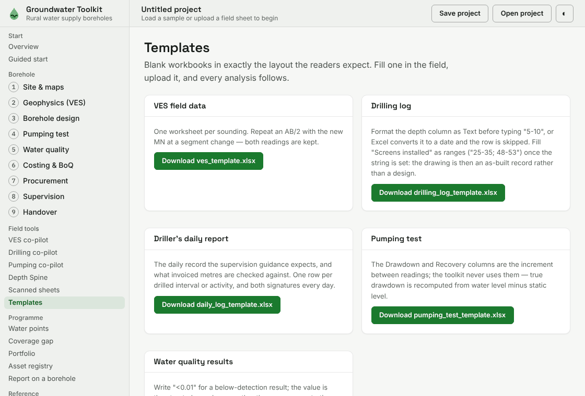
| Template | Used for |
|---|---|
template_ves.xlsx |
Vertical electrical sounding field data |
template_pumping_test.xlsx |
Step and constant discharge tests |
template_drilling_log.xlsx |
Drilling record and formation log |
template_daily_drilling_report.xlsx |
The driller's daily report, one row per interval |
template_water_quality.xlsx |
Laboratory results |
General rules for all templates:
- Work in metres, minutes and mg/L unless the column heading says otherwise.
- Type numbers as they appear on the instrument. Leading zeros such as
078.7are fine. - Never leave the header block empty. Community, district, GPS coordinates (UTM), date and the responsible person matter as much as the readings; the checks compare them across sheets.
- Record the UTM zone (28N in the west including Freetown and Port Loko, 29N in the east). The system flags coordinates that do not match the stated district.
1a. The field kit (for teams without a device)
A crew with no phone or tablet to run the co-pilots on takes the field
kit instead: Field kit on the Templates page, or on the Pumping
test page, in either app (in the browser app,
#/templates). Type the borehole identifiers,
one a line, as the sheets should print them; the boxes start with the
ones the project's sheets already name. The kit is one Word document
to print:
- A pumping test sheet for each borehole, pre-filled with the
community, client, district and borehole number. It states the
casing-storage time for the project's casing and riser at a cautious
transmissivity of 1 m2/day, and so how long the pump must run. Its
Time column holds the reading schedule the pumping co-pilot uses,
for the pumping and again for the recovery. Its tables have the
columns of
template_pumping_test.xlsx, so a filled sheet is typed into the template cell for cell. - Three quick cards to laminate: the pumping schedule, the VES spacings (AB/2, MN and the depth each reaches, as the VES co-pilot proposes them), and the chlorine doses for disinfecting a borehole, by casing diameter and water column.
Each sheet carries a QR code, and the same code printed under it, so
that a photographed sheet can be matched to its project and borehole
when it is read back. The code is one line of four fields separated by
|:
GWT-FK/1|pumping|<project>|<borehole>
GWT-FK/1 is the format and its version; pumping is the sheet;
<project> is the project reference, or the project name where there
is no reference (the Streamlit app has no reference field, so there it
is the name), and is empty when neither is set; <borehole> is the
identifier as printed. In the last two fields each run of spaces, tabs
and line breaks becomes one space, the ends are trimmed, % is written
%25 and | is written %7C. A code longer than the symbol can hold
(122 bytes at error-correction level H) is refused rather than cut
short; groundwater/field_kit.py has the full definition.
2. VES sheet
One worksheet per sounding. Fill the header block, then the readings: reading number, AB/2 in metres, MN in metres (the full distance between the potential electrodes, not half of it), and the apparent resistivity from the instrument.
At every segment change (for example AB/2 = 3, 10, 40 and 70 m), repeat the same AB/2 with the old MN and again with the new MN. Both readings are used; do not delete either one. The inversion merges the two by geometric mean. A spacing read twice with no MN change recorded (no MN column, or the same MN throughout), and any repeat on a Wenner sheet, is fitted as two readings, and the flags say so.
A sheet may record the instrument's resistance (V/I, in ohms, headed for example "R (ohm)") in place of the apparent resistivity. The reader then multiplies each reading by the geometric factor K, from the sheet's K column or from AB/2 and MN. K needs MN/2 between 0 and AB/2, so a row outside that is left out with a warning that names its AB/2; the rest of the sheet and the workbook are read. A column whose unit is ohm-metres (ohm-m, ohm.m, Ωm, Ω·m) is a resistivity whatever its heading says, so "R (ohm-m)" is read as it stands and not multiplied again.
A sounding is inverted from four spacings up, and is fitted with no more layers than leave it one reading to spare: two layers below six spacings, three below eight, and four from eight. A sounding cut short at four or five spacings is therefore read as two layers, however many the ground has. A row whose AB/2 is 0 (a formula over a blank cell, or a placeholder) is kept as read, flagged "A spacing must be positive", and left out of the inversion.
The depth to bedrock is the top of resistive ground with nothing conductive below it in the fitted model. A layer as resistive as fresh basement (3,000 ohm-m by default) that lies over a water-bearing or clay-rich layer is read as a resistive cover, such as a duricrust or a dry layer, and the interpretation says so; bedrock is then looked for below the conductive ground.
2a. VES co-pilot (browser app, at the peg)
The browser app has a page that checks a Schlumberger sounding as it is
taken: VES co-pilot, under Field tools, at
#/vescopilot. It is in the browser app only;
the Streamlit app's Geophysics page says so, and reads the workbook the
co-pilot writes like any other. It works with no network once the app is
installed.
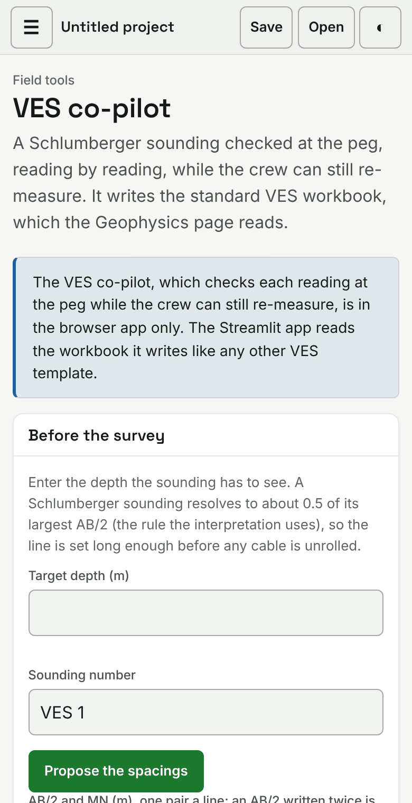
Before the survey. Enter the target depth and press Propose the
spacings. A Schlumberger sounding resolves to about half of its largest
AB/2, the same rule the interpretation and the drilling depth use, so a
50 m target needs AB/2 = 100 m: 200 m of straight, open ground centred
on the peg. Check that the ground is there before anyone unrolls a
cable. The proposal runs 1, 1.5, 2, 3, 4, 5, 6, 8, 10 m and on, with MN
never more than a fifth of AB, and changes MN when AB passes twenty
times it; at each change the plan lists the same AB/2 twice, once with
each MN. The plan is a text box, one AB/2 MN pair a line: edit it to
suit the ground (or to match a paper sheet already in use) and press
Use this plan.
At each reading. The form is filled in with the next spacing on the plan. Enter the potential V in millivolts and the current I in milliamps, or the apparent resistivity if the instrument shows it, and press Add the reading. The resistivity is worked out with the exact Schlumberger geometric factor the parsers use, and the point goes on the log-log curve at once. Four things are checked at the peg:
- A rise steeper than 45 degrees. Over layered ground the curve can climb no faster than one decade of resistivity per decade of AB/2. Over a resistive basement it climbs at very nearly that, so a reading is called out only when it sits more than 10 percent above the 45-degree line from the reading before it at the same MN: room for the finite MN and a good reading's scatter. Steeper than that is a misread potential, a peg in the wrong place, a current electrode with no contact, or ground that is not layered.
- An MN change whose two readings disagree by more than 20 percent, the same test and threshold the Geophysics page applies to an uploaded sheet. Re-read both before the current electrodes move.
- A potential too small to read reliably. The default is 1 mV; set your instrument's figure under Instrument. Raise the current (water the current electrodes), or widen MN and read the spacing at both MN.
- A spacing skipped or read twice, against the plan.
The first three say Re-measure now; press Re-measure this reading and the new reading takes the old one's place. The table keeps what each reading raised.
Preview inversion. From the eighth reading the app fits a layered
model to the readings so far, in the background, and draws it on the
curve. It says whether basement is in view within the depth the line
resolves so far, so the team can extend the line while it is still
laid out. It is a preview, refitted after each reading; Stop the
preview stops it, and so does leaving the page. A copy of the app
opened straight from a file (file://) has no background worker, and
the fit would hold the page for some seconds after every reading, so
there it runs only when Run the preview now is pressed. The finished
workbook is interpreted on the Geophysics page.
The workbook. Take the GPS position (at the centre peg; the browser asks permission the first time) and Download the workbook. It is the standard VES template, with the site details from the Site page, the device clock and GPS fix in the header, the position also written as UTM, and V, I and the time of each reading beside the resistivity. Upload it on the Geophysics page. The readings are saved in the browser with the project a moment after each one is added, so a reload or a closed tab does not lose them, and opening another project or a sample keeps them. Start a new sounding clears them, and so does Reset everything on the Settings page, so download the workbook first.
3. Pumping test sheet
Fill the header block including the static water level measured before
the pump started, the pump setting depth and the borehole depth. Write
step or constant in the test type cell.
- Record depth to water in metres below the measuring point at each
time. The
Drawdowncolumn is the change since the previous reading, exactly as on the paper sheets; the analysis does not use it and recomputes drawdown from the static level, so small arithmetic slips there do not matter. - Reading times do not need to be evenly spaced. Record the actual
minute of each reading. A time written as hours and minutes,
1:30, or typed into a cell Excel shows as a clock, is read as the elapsed time it shows (90 minutes), as Excel reads it; the page says how many readings were read that way. Head the columnTime (mm:ss)if5:30means five and a half minutes. Do not write the time of day: a sheet whose earliest reading is08:05is refused, with nothing on it used, because the time since the pump started cannot be worked out from it. A time that starts as a clock and is not one (1:30 pm,1:60) or that writes hours and minutes as words (1h 30m) is left out, and the page lists it; write1:30or90. - Write the length of each step with its unit if it is not in minutes
(
1 h); a length the toolkit cannot read is not used, and each step is taken to have run as long as its own readings show. - The four column groups cover hours one to four. For a step test each group is one step; for a constant test they continue one series.
- The recovery block has its own time column: minutes since the pump
stopped. A recovery written over several blocks is joined into one, as
the pumping blocks are; head each with the minutes it covers
(
Recovery 61-120 min) if its times start again at 1. A recovery whose first time is at or after the minute the pump stopped (241 after a 240-minute test) is read as the test's own clock and moved back to the stop, and the page says so; head its time columnTime since pump stopped (min)if the times really count from the stop. - If the sheet records the casing and riser, as
Casing diameter (in)andRiser diameter (in)with the value beside each, the analysis uses them for the casing-storage period instead of the project's settings. Write each with its unit; one with no unit is not used, and the page says so. - Record the discharge of every step in the discharge row (bucket and stopwatch: litres divided by seconds, times 3.6 gives m3/h). Without any discharge the system still draws the curves but reports transmissivity and yield as pending. Without the last step's, the recovery is not analysed: it is read against the rate the pump stopped at.
What the pumping test page and report make of the sheet, besides the straight-line fits:
- A diagnostic plot. Drawdown and its derivative on log-log axes. The slope of the derivative names the flow regime: about 1 while the pump empties the casing, flat for radial flow through the aquifer, about 1/2 for flow along a single fracture, and a fall or a rise after the flat part for a recharge or a no-flow boundary. The slope limits are settings, printed under the plot.
- A band on every figure that matters. The transmissivity the yield rests on is given from the 10th to the 90th percentile of refits to the readings' own scatter, and the safe yield and the pump intake are given as bands too. Read the band as the least the spread can be: on test data it held the true value about seven times in ten, not eight. A yield is called sustainable only where the bottom of its band still covers the recommended rate at the dry-season level. The yield tables print a second range beside the yield, labelled "range over the assumptions": the safe yield over the fitted transmissivities, the assumed storativity and well radius, and a dry-season decline of 1 to 4 m. It is not the band from the readings' scatter.
- A level that holds. The pumped level is called stabilised, and a recharge boundary or leakage indicated, only where its fitted line moved by less than a dipper reads (1 cm) over the last half log cycle of the test (or of the last step), at under half the slope it rose at over the log cycle before. A drawdown still rising at its full slope is not stabilised however close its last few readings are. A Cooper-Jacob line drawn through such a level is not used.
- The early readings are used. A test that never got past casing storage is fitted with the Papadopulos-Cooper solution for a large-diameter well, which models the water drawn from the casing. Its result is still marked indicative: run the test longer.
3a. Pumping test co-pilot (browser app, on a phone or tablet)
The browser app can sit with the crew while the test runs and fill in
the pumping test sheet for them. Open Pumping co-pilot (sidebar,
under Field tools; address #/pumpcopilot).
It exists only in the browser app; the Streamlit app says so on its
Pumping test page. Install the app on the phone and open the page once
with a network: after that it works with none.
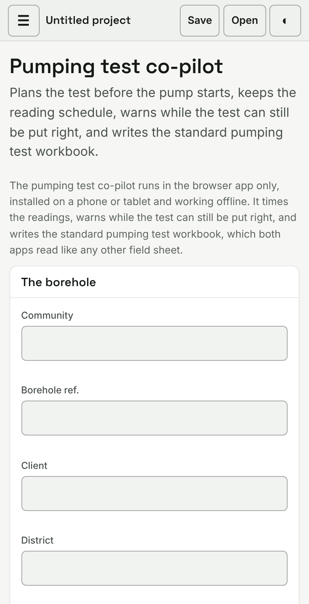
Before pumping. Enter the casing and riser diameters, the hole depth, the pump setting, the static level (read it before the pump starts) and the planned rate. The page works out how long the water standing in the casing controls the drawdown (Schafer's casing-storage rule), for a cautious transmissivity range of 1 to 10 m2/day that you can change. Until that period is over, the level tells you about the casing, not the aquifer. The page then says when the test can stop at the earliest: "If the pump starts now, do not stop before 13:07." A 30-minute test on a 5-inch casing in weathered basement is usually all casing storage, which is what happened at Dr Timbo's. Press Record GPS position to put the phone's position in the sheet; the phone asks for permission first.
While pumping. Press Start the pump at the moment it starts. If the pump was started before you opened the page, enter how many minutes it has already run before you press it, so the readings are timed from the real start. The page counts down to each reading and beeps when one is due, on this schedule: 0.5, 1, 1.5, 2, 3, 4, 5, 6, 8, 10, 12, 15, 20, 25, 30, 40, 50, 60, 75, 90 and 120 minutes, then every 30 minutes. Type the depth to water and press Record level. A reading typed from 6 seconds before its time to a fiftieth of the time after it (6 seconds early in the test, 2.4 minutes at two hours) is written at the scheduled minute, as you would write it on paper; any other is written at the minute it was actually taken. Drawdown is plotted against log time as you go, with the casing-storage period shaded and the pump intake drawn across.
The page warns you:
- when the level reaches the pump intake (and earlier, when it is within 3 m of it): reduce the rate, because a pump cannot draw water below itself and the readings would be worthless;
- when a discharge measurement differs by more than 5 percent from the first one of the same step: set the valve back and measure again;
- while the test is still inside casing storage, and until the time it may stop. Stop the pump asks again if you press it early. Once levels are being read, the drawdown gives its own casing-storage period, but that period keeps growing while the level is falling, so the cautious figure from before pumping stands until the readings have passed the measured one;
- when the phone's clock is set back during the test, since every minute is worked out from it.
Each warning starts with how urgent it is in words (Act now, Warning or Note), not only in its colour.
Once the readings are past casing storage, the page fits the same Cooper-Jacob line the analysis will, and says how much the transmissivity has moved over the last log cycle. "T has changed less than 10 percent over the last log cycle. The test can stop at the planned time" means the test has done its job. If the planned time is earlier than the shortest test the analysis can give a yield from, the page says so and gives the later time instead.
Discharge. Use the bucket and stopwatch: enter the bucket volume, time three fillings (with the watch on the page, or type the seconds) and press Record this rate; the three timings are averaged. Measure again every hour or so, and after any change at the valve. A meter reading can be entered instead. A step with no discharge cannot be saved: if it really was not measured, record it as not measured and say why. The reason is written on the sheet.
Step tests. Choose Step drawdown, give the number of steps (up to four) and the step length, and press Start step 2 (and so on) at the moment the rate changes. The schedule starts again for each step.
Recovery. Press Stop the pump at the moment it stops. The schedule starts again from that moment, and recovery readings are minutes since the pump stopped.
If the phone sleeps or the page is reloaded, nothing is lost: every reading is saved on the phone as it is taken, and the clock is the phone's own clock, so the page reopens at the right minute and lists any readings that fell due while it was asleep. Do not invent a missed reading; take the next one.
At the end, press Write the workbook (.xlsx). It is the standard pumping test sheet (section 3), with the phone's clock at the start and stop of pumping and the GPS position in the header, and a second sheet logging every reading, timing and event. Upload it like any other sheet, or press Use it as this project's pumping test to analyse it at once; that also sets the project's casing and riser diameters to the ones entered here. The sheet carries them too, and both apps' readers take them from it, so the sheet analysed in another project keeps its own casing. Save the project file as well (section 11).
4. Drilling log
One row per drilled interval (0-5, 5-10, ...). Describe the sample
from the cuttings in plain words (colour, grain, weathering, clay
content); note fracture zones and write the depth of every water
strike in the water strike column. The design module places screens
against these depths, so accuracy here directly shapes the borehole
design.
A depth may carry a decimal comma (12,5-30 is 12.5 to 30 m). A log
kept in feet is read in feet: say so in the column headers ("Depth
interval (ft)", "Total depth (ft)", "Penetration rate (min/ft)") or
against the depths themselves (0-20 ft, 45', "water strike at 90
ft"). Both apps convert every depth to metres at 0.3048 m to the foot,
kept to the centimetre, convert rates per foot to metres a minute, and
say on the log and beside the readiness gate that they did. A depth
with no unit of its own is read in the unit its column header (or its
label, for the total depth) names; failing that, in feet when every
depth or rate unit the sheet names is feet, and in metres when it names
only metres or none. Where the sheet names both feet and metres, or a
header names both ("Depth (m/ft)"), a depth with no unit of its own is
not read at all, and the log says which cell to write the unit in. A
row or a strike the reader had to set aside keeps the drilling log from
being called complete by the readiness gate until the sheet is
corrected, and a cell it could not read also keeps it from saying that
every reading carried a unit it could read.
A lens logged inside a longer interval (0-30, 5-10, 30-45) is
flagged as an overlap but not as a gap, and the total depth is checked
against the deepest bottom logged only when the sheet states one.
No screen is placed inside the grouted interval. Where the hole is
wide enough for a gravel pack or a formation stabiliser (at least 50 mm
of annulus a side), the top screen is also kept below the height the
design rules put the pack above it (gravel_pack_above_top_screen_m,
2 m by default), so that grout placed on the pack cannot reach the
screen: under a 20 m grout, a fracture logged at 20-26 m is screened at
22-26 m. A screen set by hand, or recorded as installed, higher than
that keeps its place; the design basis then says where the pack's top
falls against the top screen ("level with", "1 m above", "5 m below")
and a warning, gravel_pack_short, says why.
4a. Drilling log co-pilot (browser app, at the rig)
The browser app keeps the drilling log as the hole is drilled: Drilling
co-pilot, under Field tools, at
#/drillcopilot. It is in the browser app
only; the Streamlit app's Borehole design page says so, and reads the
drilling log it writes like any other. It works with no network once the
app is installed.
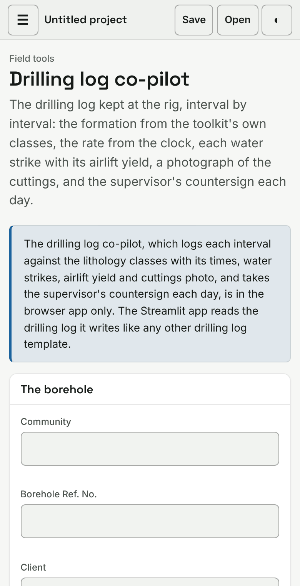
Each interval. Press Start drilling when the bit touches the top of the interval. When it reaches the bottom, enter the depth, choose the formation from the list and add a note (colour, grain, hardness), then press Log it and drill on, or Log it and stop for a rod change of any length, the end of the shift or a breakdown. The list is the toolkit's own lithology classes, the ones the design and the Depth Spine read a log by, so the formation is never a word the design reads as something else. The note goes after the class, and a note that would make the row read as another class is refused: "Weathered rock, sandy" would read as sand and gravel, and saprolite logged as "Clay, soft saprolite" would read as saprolite. A fracture zone is logged as an interval of its own: a depth range in the note ("Fracture zone, 27-28 m") is read as a zone inside the row, with the rest of the row as other material, and is refused. A water strike is never written in the note: it has its own box.
The penetration rate is the time from Start drilling to the log of the interval, on the device clock, over its length, in minutes per metre. Rod changes inside an interval count in it; press Log it and stop and Start drilling again to keep a long stop out. An interval cannot start before the last one ended: if the device clock has been set back, it is refused until the clock is right.
A water strike is recorded on the interval it was struck in, with its airlift yield: a container timed filling (up to three timings; the yield is the volume over the mean time), or the head over a 90-degree V-notch plate, read by the Kindsvater-Shen equation. A notch head under 50 mm or over 380 mm is outside the range the notch's coefficient holds for, and the page says so; time a container as well. If the yield could not be measured, say why, without naming the strike: the reason is written in the log, where the readers would take a number in it for another strike. It is an estimate while drilling, not a pumping test.
Cuttings. Each interval takes a photograph of its cuttings, laid out beside the metre mark. It keeps the capture time, the position and the SHA-256 of the file, as every photograph in the app does, and the depths of its interval.
Each day the supervisor types their name and presses Countersign. The name, the device time and a SHA-256 digest of the day's entries are kept. A change to a day after it is signed needs a reason, and the day then shows as amended after signing until it is countersigned again (or changed back to exactly what was signed). Each interval keeps the day it was logged on, so a log opened on a device set to another time zone keeps its days and their countersigns. This is a record, not a cryptographic signature: it shows a change, but anyone with the file could change a day and its digest together.
The sheets. Download the drilling log writes the standard drilling log template, with the rate headed in min/m, the airlift yield, the device-clock times and each photograph's hash after its seven columns, and sheets for the photographs and the countersigns. Download the daily reports writes the driller's daily report template, a sheet a day, with the countersign in the supervisor's signature cell; the rig operator's cell is left for a pen. No page reads the daily report back. Use it as this project's drilling log hands the log to the Borehole design page.
5. Water quality sheet
Enter the laboratory certificate values against the pre-printed
parameter list. For results below the detection limit write < and
the limit (for example <0.01) in the value column; the words a
certificate uses for the same thing (Absent, ND, Not detected)
are read too. For E. coli and total coliforms, <1 or Absent means
not detected in the 100 mL sample, which is the guideline being met.
Add extra parameters on new rows with their units: the common
certificate spellings (Iron (Fe), Total alkalinity, Nitrate-N,
Colour, Thermotolerant coliforms) are recognised.
Units. A unit written in the result cell is read before the unit
column's: 0.05 mg/L in a row whose unit is ug/L is 50 ug/L, and
8 ug/L with the unit cell blank is 8 ug/L, as are 5.0E-02 mg/L and
(0.05 mg/L). A note beside the number that holds no unit (0.5 ND,
8 (field), 8*) is not a unit, and the number is read in the row's
unit; so is a laboratory's qualifier letter (0.003 D, 0.2 H,
0.1 M), and a lone C or F unless the row's own unit is a
temperature (68 F in a row of deg C is 20 deg C). A cell that holds a
unit with more written beside it (0.05 mg/L As, 25 mg/L CaCO3,
0.05 mg/L, est), a basis without "as" (10 NO3-N, 10 (N)), or a
unit the toolkit does not read (5 meq/L, 5 ppt) is refused rather
than read in the row's unit: write the unit in the unit column, and a
basis as mg/L as N. A unit in brackets in the result column's header,
Result (ug/L), is the unit of every row whose unit cell is blank; a
row it cannot measure, such as E. coli under Result (mg/L), is then
refused rather than read in another unit, so give such rows their own
unit. A count per 100 mL may be written CFU/100 mL, MPN/100 mL,
No./100 mL, Nº/100 mL, /100 mL or per 100 mL, and oC or ºC
is degrees Celsius. Present or TNTC for E. coli or coliforms is a
count above zero whatever its unit, so it is not refused over a unit
the toolkit cannot read; a number in such a unit still is.
Bases. Nitrate and nitrite reported as nitrogen (Nitrate (NO3-N),
Nitrate (N), Nitrite (NO2-N), Nitrate-N, Nitrate (mg/L as N),
Nitrate (mg N/L)) are held to the guideline for nitrogen, 11.3 and
0.91 mg/L (the 50 and 3 mg/L guidelines for the ions, expressed as
nitrogen), and the remark gives the ion's figure. Nitrate with the
unit mg/L as N or mg/L as NO3-N is put on the ion's scale (x
62.004/14.007), and calcium, magnesium, bicarbonate and carbonate in
mg/L as CaCO3 on their own, by the ratio of the molar masses
(calcium x 40.078/100.087); an info flag gives the factor, for a
measured value, a < or a > alike. A name and a unit that state
different bases are refused, whichever of them is the table's own:
Nitrate (as NO3) in mg/L as N, Nitrate-N in mg/L as NO3,
Calcium (mg/L as CaCO3) in mg/L as Ca. So is a unit that names
another ion's nitrogen, Nitrite in mg/L as NO3-N. The
charge balance, the hazard index and the water quality index read
nitrate and nitrite as the ions whichever basis the sheet used.
A determinand with no guideline value (temperature, calcium,
alkalinity) in a unit that cannot be read does not hold up the verdict:
there is no limit for the unit to decide. It is left out of the charge
balance and the corrosivity indices, and a warning, value_not_used,
says so.
Results are judged against two columns: the WHO guideline value and a
national one. The national column is provisional. Its values are
WHO figures carried across or limits taken from regional practice, and
have not been confirmed against the Sierra Leone Standards Bureau
drinking water specification. The apps and the water quality report say
so wherever a national verdict appears. Treat a national exceedance as
a reason to check the specification, not as a compliance finding to put
in front of a regulator. The table is an editable CSV
(groundwater/data/who_guidelines.csv): confirm a figure, put the
issuing specification in its sl_source column, and the warning drops
away for that parameter.
The rising main the design specifies
Galvanised iron rising mains and rods corrode quickly in aggressive water, and a corroded main is a common reason a handpump fails early. So the Rising main card on the Borehole design page (both apps) reads the sample on the Water quality page:
- Aggressive water - the corrosivity classification on the Water quality page counts it aggressive (a Ryznar index above 7.0, a Langelier index below -0.5 or an aggressive index below 10), or its pH is below 6.5, the limit of the supervision page's handpump corrosion check. The design specifies a stainless steel rising main in place of galvanised iron, inspected every 6 months. The card quotes the index values or the pH and names the sample by its identifier and date.
- Water that is not aggressive - galvanised iron, inspected every 12 months, with the index values that say so.
- No sample, or one that lacks pH, calcium or alkalinity (and whose pH, if it has one, is not below 6.5) - the card says the choice rests on no chemistry, or on no corrosivity index. The design keeps galvanised iron and the 6 month interval until a sample with all three is analysed. Analyse one before the pump is ordered.
The choice follows the sample: load or replace the water quality sheet
and the design changes with it. The materials and both intervals are
settings (groundwater/data/defaults.json), and the intervals are a
choice made in this toolkit, not a standard; QUESTIONS.md item 13 asks
for them to be confirmed. The card reads only the one sample the project
holds, so a sample from another borehole, or from another season, is
read as this borehole's water. The completion and handover reports do
not name the rising main yet. The asset registry schedules the rising
main's inspection at this interval, as the routine inspection (9b).
5a. Finding your way around
The web interface is one workspace with a sidebar. The sidebar holds the site details (community, area, GPS - filled in once, used by every page and every report), the project file panel for saving and loading, and the page list in five groups, the same groups in the same order in both apps:
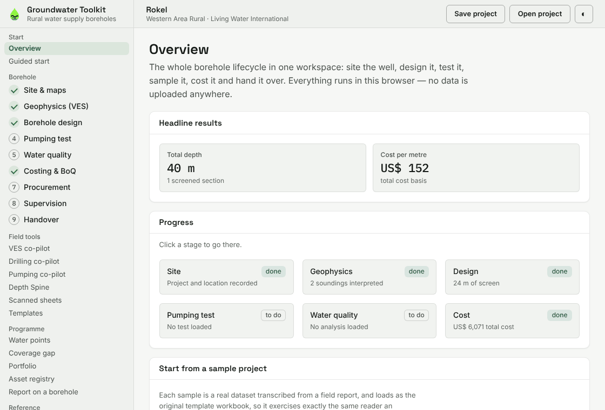
| Group | Pages |
|---|---|
| Start | Overview, Guided start, Training (browser app only) |
| Borehole | Site maps, Geophysics (VES), Borehole design, Pumping test, Water quality, Costing & BoQ, Procurement, Supervision, Handover |
| Field tools | VES co-pilot, Drilling co-pilot and Pumping co-pilot (browser app only), Depth Spine, Scanned sheets, Templates |
| Programme | Water points, Coverage gap, Portfolio, Asset registry, Report on a borehole (browser app only) |
| Reference | Verify a document, Settings and About & method (browser app only) |
The Borehole group is the work itself, in the order it is done: its pages are numbered as steps, and a step is ticked once it is done. The other groups are what is used along the way and what is looked up.
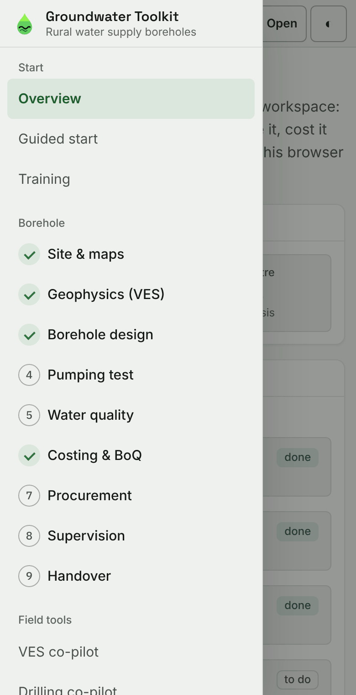
The same pages are in the standalone browser app, which needs no
install and no Python; it keeps the project in the browser and saves it
as a .gwt.json file rather than a .yaml one. Either app can read
the other's saved projects on the Portfolio page.
In the browser app every page has an address of its own: the app's
address followed by #/ and the page, so the Geophysics page is
index.html#/ves and the pumping test page is
index.html#/pumping. The browser's back and
forward buttons move between the pages you have visited, a bookmark
opens the page it was made on, and an address can be written into a
report, an email or a QR code on a field sheet. Some pages go one step
further and name one thing on them:
| Address | Opens |
|---|---|
#/overview |
Overview |
#/site, #/site/terrain |
Site & maps, at its topography and terrain card |
#/ves, #/ves/VES-3 |
Geophysics, at sounding VES-3 |
#/vescopilot |
VES co-pilot |
#/design |
Borehole design |
#/pumping, #/pumping/KTL-01 |
Pumping test, for borehole KTL-01 |
#/quality |
Water quality |
#/costing |
Costing & BoQ |
#/supervision |
Supervision |
#/handover |
Handover |
#/registry, #/registry/<asset id> |
Asset registry, for that borehole |
#/report, #/report/<asset id> |
Report on a borehole, that one: what a linked plate's symbol opens (9d) |
#/templates |
Templates |
The other pages follow the same pattern (#/guided, #/training,
#/pumpcopilot, #/drillcopilot, #/spine, #/extract,
#/procurement, #/waterpoints, #/coverage, #/portfolio,
#/verify, #/settings, #/about). An address opens the page in
whatever project the browser has open; it does not carry the project
with it. If it names a sounding or a borehole the open project does not
hold, the page says so across the top rather than showing another one
in its place; the report page, which needs no project, is the
exception, and checks the identifier instead. An address the app does not know opens the Overview.
The browser app can be worked from the keyboard alone. The first Tab from the top of the page reaches Skip to content, which moves straight to the page you are on; after it come the buttons in the top bar and then the page list, in the order it is shown, and Enter opens a page and puts the keyboard on it. A question the app asks in a box over the page (Reset the workspace?, a figure's numbers as a table, a photograph shown full size) takes the keyboard when it opens: Tab and Shift+Tab go round inside it, Escape closes it, and the keyboard goes back to the button that opened it. On a phone the page list is behind the ☰ button in the top bar, which says to a screen reader whether the list is open; opening it puts the keyboard on the page you are on, and Escape closes it again. The short messages that appear in the bottom corner are read out by a screen reader as they arrive, an error at once and anything else when it next pauses. Every page is checked with axe-core, an automated accessibility checker, in the checks each change to the app goes through, in both themes and with each sample loaded. That finds what a machine can find (a field with no label, text too faint against its background); it is not a test with a screen reader, which has not been done. The Streamlit app has had none of this work.
The browser app installs. Open it once with a connection and it keeps itself on the device; the Overview page then offers an Install button, after which it opens full screen like any other application and works with no network at all. Only the live water point lookup and the AI-assisted scan reading need a connection - everything else, including every sample project and the standards tables, is already on the device.
The browser app also keeps a running copy of the session in the browser's own storage (IndexedDB), so a refresh never loses fieldwork. Each workbook and photograph is kept there once, as a file of its own, and a change writes only the part of the session it touched, so typing does not stutter however many photos the project holds. The Settings page shows how much room it takes, and whether the browser has agreed to keep it rather than clear it when the device runs short of space. That storage is still finite. If a write fails, the app says so across the top of the page and asks for a project file: from that point the file you save is the only record, so save one. A browser that will not give the app any storage at all gets the same warning as soon as the app opens.
Only one tab saves the session. Open the app in a second tab of the same browser and that tab opens the saved copy, says across the top that another tab is saving the project, and saves nothing itself. Continue here moves the saving to it: it opens what the other tab saved, and the other tab stops saving and says so. A session kept by an earlier version of the app, in the browser's older local storage, is moved across the first time the new version opens; if you go back to an earlier version for a while, what it saved is the copy the new version opens when you return.
The VES inversion takes a few seconds per sounding on a laptop, and longer on an older one; a pumping test analysis is usually quicker. In the browser app both run in the background. A bar across the top of the page says what is running and how far it has got, and the rest of the app can be used meanwhile. Cancel on the bar stops the work at once and keeps nothing from it: a stopped inversion leaves the Geophysics page as it was, with a button to run it again, and a stopped pumping analysis leaves the test loaded with an Analyse now button. Opened as a file (a copy on a USB stick, say) rather than from its web address, the app cannot run work in the background: it gives the same results, but the page is busy while each sounding is inverted, and a Cancel press is only read between soundings.
Once the soundings are inverted, Sample the range of models on the
Geophysics page (the Streamlit app has the same button) samples the
models that fit each sounding about as well as its best fit, and says
what they agree on: "Basement between 22 and 34 m (P10 to P90); not
resolved in 30 percent of the models that fit", the thickness of the
water-bearing weathered zone, and a drilling depth read from the 90th
percentile and still cut back to the depth the sounding resolves. A grey
fan of the sampled models is drawn over the curve, and the report prints
the same sentences under each sounding's best fit, which is left as it
was. It takes a few seconds a sounding, with its own bar and Cancel; the
settings are under ves_range in the project's configuration, and the
error each reading is given (3 percent, plus the measured disagreement
at each MN overlap) is provisional.
Beside the drill-target suitability score, both apps' Geophysics pages and both geophysical reports give each point the chance of a working borehole: "About 61 percent (between 39 and 78) that a borehole here yields enough for a handpump through the dry season. Provisional prior." It is worked out in a way that can be checked on paper:
- The prior is a success rate for the ground under the point: the
BGS aquifer class and the USGS geology unit there, looked up on the
bundled maps at the point's own coordinates, or the site's if the
point has none. The table,
success_prior.csv, gives each class's yields from the BGS atlas user guide (O Dochartaigh 2021); read as the quartiles of a lognormal spread, they say what share of boreholes reach the yield that counts as success. A point with no class (no position, or open water on the map) gets an even chance, labelled a placeholder. - "Success" is a yield of at least 1 m3/h at the dry-season level,
the handpump design rate. It is
odds.success_yield_m3_per_hin the project's configuration, and changing it changes the prior. - The evidence multiplies the odds: a factor for the depth to
basement and for whether basement was resolved (both from the range
of models, so both are left out, at a factor of 1, until the range is
sampled), and one for the resistivity of the water-bearing zone. A
poor fit does not make the ground drier; it draws those three factors
back towards 1. The factors and their reasons are in
success_evidence.yaml. - The band is the prior's own uncertainty, a Beta distribution as firm as 10 boreholes for a cited class and 2 for the placeholder, carried through the same factors.
A table under each point shows what each piece of evidence was, the factor it multiplied the odds by and the chance after it, so the factors multiply back to the answer. Every number in both files is provisional until a hydrogeologist confirms it and drilled outcomes calibrate it, and the reports say so. The suitability score stays beside the odds for comparison.
The suitability score's resistivity part reads the water-bearing
layers inside the point's water zones, as the odds do. A zone is
rounded to whole metres, and the slice of dry cover or basement the
rounding takes in is not part of it. The points are ranked on the
score discounted by the fit's confidence, and equal weighted scores
are ranked by sounding id. Two points whose weighted scores are less
than the tie margin apart (3 points, ves.ranking_tie_points in the
project's configuration) are called indistinguishable, and the choice
between them is left to access and sanitary distances. The gap is
taken to the tenth of a point the reports print it to, so a gap
printed as 3.0 is never called inside a 3-point margin.
Overview opens first and is the project dashboard: the lifecycle strip across the top shows how far the borehole has got (Sited → Drilled → Tested → Assessed → Handover), and the cards below summarise whatever has been produced so far.
5b. Guided start (new projects)
The two apps differ here. In the browser app, Guided start lists the eight steps of the work in order (record the site, site the borehole, design it, test it, check the water, cost the works, supervise construction, hand over), each with a Go button to its page and a bar showing how many are done.
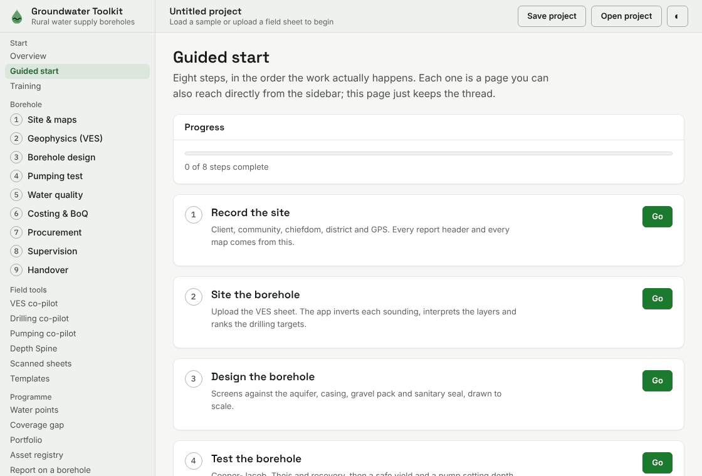
In the Streamlit app, Guided start walks a new project through the core sequence in three steps: fill the site details (the wizard checks them off as the sidebar panel is completed), run the siting analysis on the VES workbook (the best ranked sounding sets the drilling depth, or a planned depth can be entered directly), and produce the first cost estimate from that depth. Every result carries over to the full pages for fine tuning, and the final step lists what to do during and after drilling.
5c. Training: find the fault (browser app)
In the browser app: #/training, under Start.
It is in the browser app only; the Streamlit app says so on its Guided
start page. It needs no network. Answering changes no project; the
buttons that open a worked example replace the project that is open.
The page sets three exercises. Each is a result this toolkit once got wrong, shown as the report gave it: the first two on its own worked examples, the third on a position typed into any project:
- The 30-minute test. A pumping test that recommended a yield.
- The aquifer 80 m deep. A geophysical report that said how deep to drill.
- The site 270 km away. A GPS position typed into the site details.
Under each is a question and four answers. Choose the one that names what is wrong. A wrong answer is greyed and the page says why it is not the fault, without saying what is; choose again. When the fault is found the page shows the finding (what was wrong, with the numbers) and what the toolkit does now about it, and a button that opens the page where that can be seen. For the first two it loads the worked example, which replaces the project that is open, so save yours first. The third opens Site & maps in the project you have, and a position converted there becomes that project's site position.
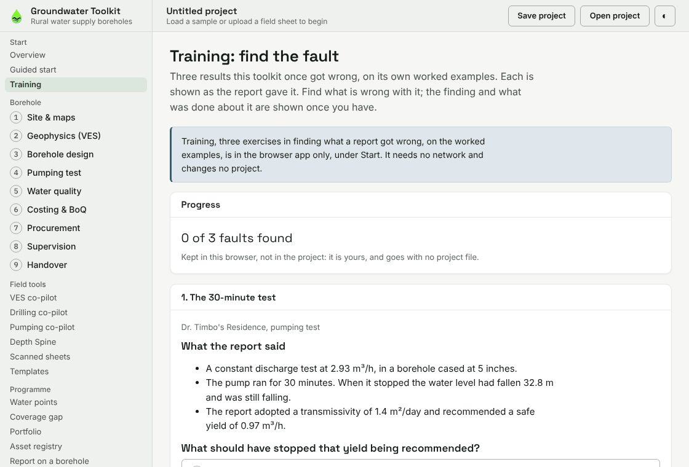
Progress counts the faults found. It is kept in the browser, not in the project, so it goes with no project file; Start again clears it, and so does Reset everything on the Settings page.
For a trainer: let each trainee answer alone before the group talks,
and ask of every wrong answer why it was tempting. The three faults
are the ones recorded in ROADMAP.md as hydraulics-1 and hydraulics-2,
ves-1 and data-ingestion-3, where the full account of each is.
6. Running the analysis (web interface)
- Open the toolkit in the browser (the analyst provides the address,
or run
streamlit run app/streamlit_app.py). - Pick the page for your data type from the sidebar and upload the filled template. Every page also offers the bundled sample files, so you can try a step before your own data arrives.
- Read the messages: green is parsed, blue is information, amber needs review, red blocks the analysis. Typical amber messages are a missing discharge, a water level above the stated static level, or a district that does not match the GPS coordinates. Fix what you can in the template and upload again.
- Supply anything the sheet was missing (the pumping test page asks for step discharges).
- Download the figures and the report.
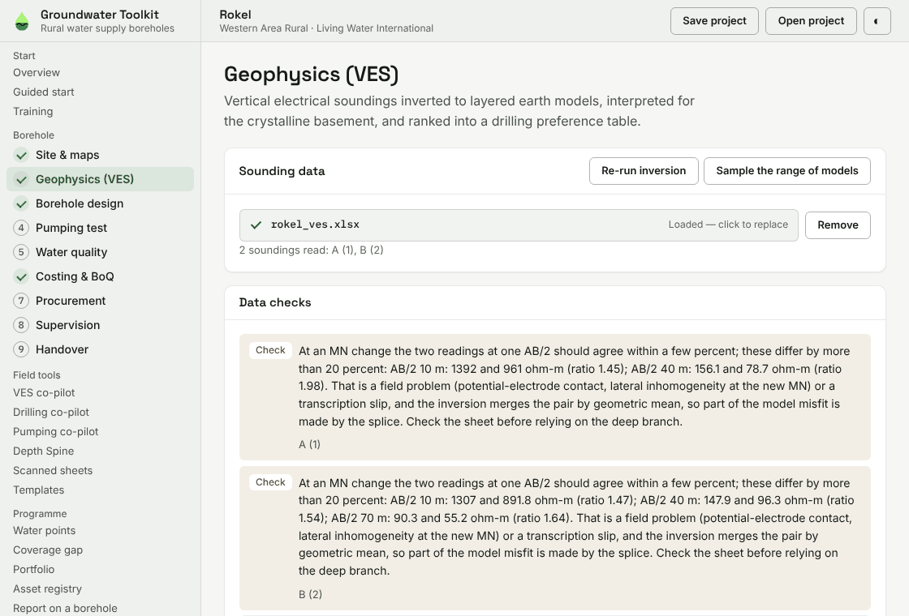
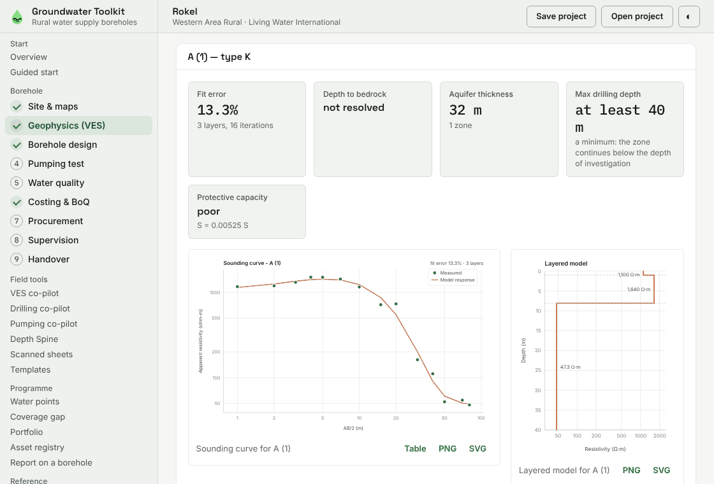
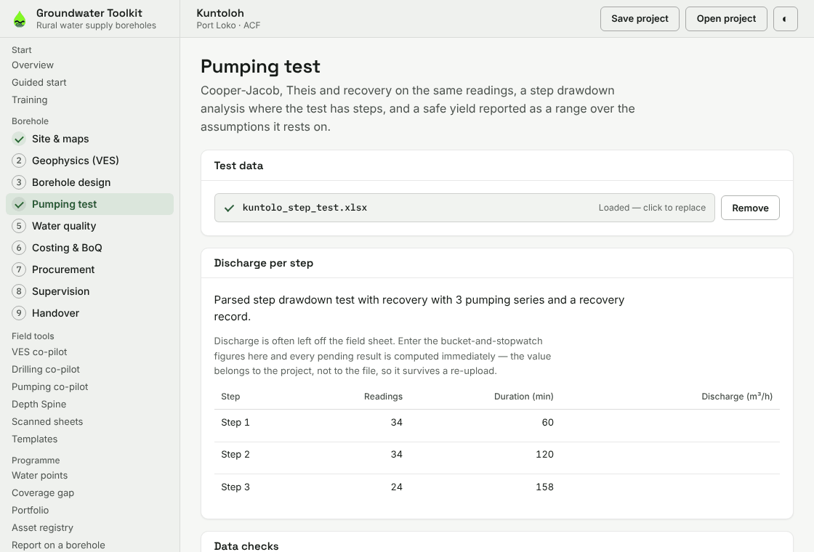
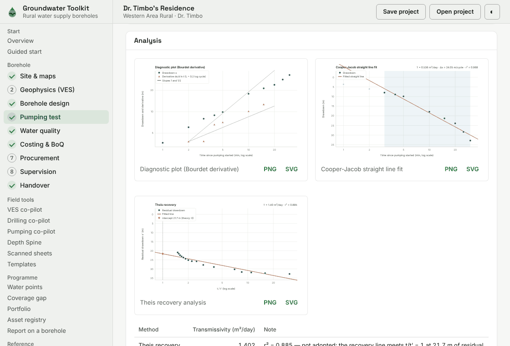
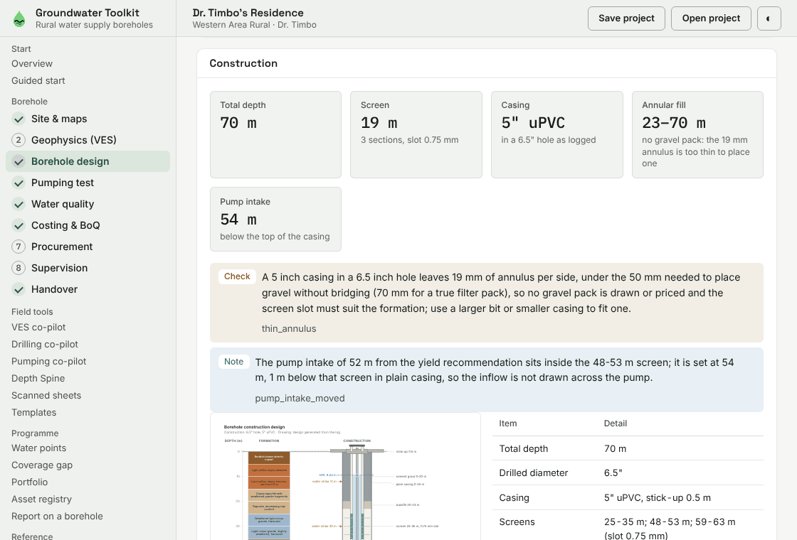
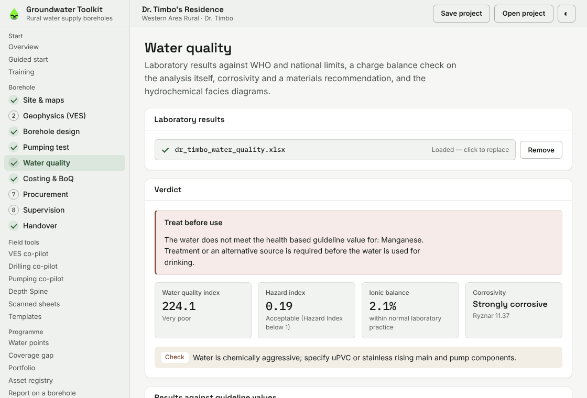
7. Costing & BoQ
In the browser app: #/costing.
Enter the planned depth, the overburden thickness if known and the one way distance from the contractor's base to the site, then press "Estimate cost". The estimate follows the RWSN Cost-Effective Boreholes method: line items roll up by construction stage and by resource category, the contractor's cost is kept apart from the contract price, and every rule of thumb applied is listed under "Assumptions applied".
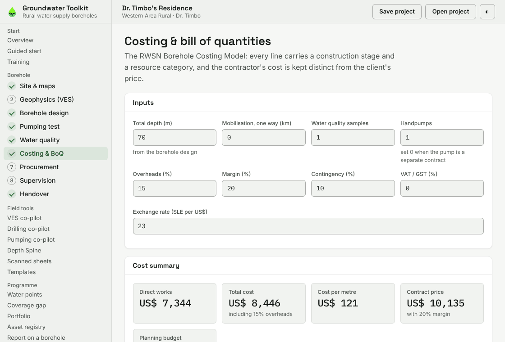
- The bundled unit rates are indicative. Open "Unit rate catalogue" and type the current local prices before using an estimate for real budgeting or contracting.
- If a design was produced in the Borehole design page, switch on "Use the design" and the casing, screen and gravel quantities carry over automatically.
- Where the design specifies a stainless steel rising main (see "The rising main the design specifies"), the bill carries line RSM1, the extra over the handpump line per metre of rising main, over the pump intake depth; with no intake known it is taken as long as the hole, and the assumptions say so. Its rate is a placeholder with no quotation behind it: type a current price in the catalogue. A material the catalogue has no rate for (uPVC) is not priced, and the estimate says so in a warning. An estimate typed in without a design takes the rising main from the water quality sample in the same way.
- Download the bill of quantities (
.xlsx, with live formulas the contractor can edit) or the full cost estimate report (.docx). - With an "Expected success rate" under 100 percent, the Streamlit
page gives the price of each successful borehole under a no water,
no pay contract. The client pays nothing for a dry hole, so each
successful borehole carries the dry attempts expected before it,
(100 - rate) / rate of them, each priced as a dry attempt: the
siting, set-up and drilling lines with the overheads, margin and
any VAT, but not the journey from the base, the casing, development,
test pumping, water sample or wellhead. At 80 percent a 60 m
borehole at the default rates is US$ 9,232, as the programme
estimate prices each of twenty such boreholes with no rig moves
between them. A contract that judges
success only after the hole has been cased and tested costs each
failure more, and so does mud drilling in sediments, where success is
known only once the casing and screens are in (RWSN's pricing guide).
From the Python API,
price_per_successful_well_usd(rate, failed_attempt_usd)takes that price (QUESTIONS.md item 15). - The programme estimate uses the siting success rate typed for it. Once soundings are inverted, the page offers the chance of a working borehole at the survey's first-ranked point beside it, with a Use N percent button; the estimate changes only when that is pressed. The odds are one point on one survey's ground, and a programme across other ground has other odds.
The cost as a distribution
Under the summary, "The cost as a distribution" gives the planning
figure beside the bill of quantities. The bill of quantities stays the
contract document: it prices every item at its likely rate and is what
a contractor is paid against. The distribution samples 20,000 boreholes
(cost_range.samples in the configuration), each with every rate drawn
between the minimum and maximum the rate catalogue gives it, and
reports:
- P50 and P80 of the cost of a completed borehole: half of the sampled boreholes cost less than the P50 and four in five less than the P80. Each is the contract price with any VAT, before contingency. Budget from these.
- The expected cost per working borehole: the mean completed borehole, plus the mean dry attempt for each of the dry attempts expected before a working one ((1 - p) / p of them at a chance p of water). The chance of water is the survey's at its first-ranked point; with no survey, no dry hole is allowed for.
- Where the bill of quantities and the planning budget (with its contingency) fall among the sampled boreholes.
The depth is drawn from the range of models at the first-ranked point
once the range has been sampled on the Geophysics page; until then it
is held at the depth typed or designed, and the page says so. The
programme estimate is sampled the same way, at its own success rate,
with each sampled programme's rates and depth drawn once for the whole
package. Both appear in the cost estimate report, section 4.1 and the
programme section. The minimum and maximum of each rate are
provisional choices, with their reasons in
src/groundwater/data/borehole_cost_spread.yaml; an edited rate keeps
its spread in proportion. The same seed gives the same figures in both
apps.
The value of one more measurement
Under the distribution, "The value of one more measurement" says what a second sounding beside the survey's first-ranked point, or a profiling line through it, is worth to the choice of where to drill, and what it costs, in the form "A second sounding beside point is worth up to US$ value to this decision and costs about US$ cost." The Geophysics page and the geophysical report print it under the chance of a working borehole once the cost has been estimated, and the cost estimate report in section 4.2.
The choice is between drilling at the first-ranked point and going to the alternative: the other surveyed point with the best odds or, on a survey of one point, an unsurveyed site on the same ground at the prior. Going to the alternative is taken to cost its expected cost per working borehole, from the distribution's mean completed borehole and mean dry attempt; drilling at the point first costs the completed borehole if it works, and the dry attempt and then the alternative if it does not. The cheaper choice is the one with the better odds. Two chances within one part in a billion of each other are the same chance. At the same odds the first-ranked point is kept, and a reading that leaves the point's chance equal to the alternative's keeps the choice. The alternative is the higher-ranked of two points at the same odds.
The measurement could read any band of the evidence the odds use (the
depth to basement and whether basement was resolved, for a sounding
whose range has been sampled, and the water-zone resistivity), each
with the factor on the odds success_evidence.yaml gives it, weighted
by the point's own fit. The factors do not say how often each band is
seen, so the bands are spread among dry boreholes as evenly as the
factors allow, and among working ones by the factors. That spread is a
choice, not a bound: another the factors allow can put the value higher
or lower, so the page says so. A table under
the sentences gives every band, its two shares and the chance of
reading it now. For each combination of bands the chance at the point
is worked out again and the choice taken again; the value is the
expected cost of the best choice now less the expected cost of the best
choice after the reading. It is never negative, it is zero when no
reading can change the choice, and the page says so, and it is never
more than the value of knowing for certain whether the point would
work, which is printed beside it. The new reading is taken as
independent of the ones already made, given whether a borehole at the
point would work; a sounding beside the first reads much of the same
ground, so on that count the value overstates what it adds. The costs of a sounding
(US$ 100) and a profiling line (US$ 150) are provisional figures in
src/groundwater/data/field.yaml with no recorded source.
8. Supervision
In the browser app: #/supervision.
The checklists follow the RWSN/UNICEF supervision guidance, stage by stage from procurement to post-construction monitoring. Answer each item Yes, No or N/A as the works proceed; items marked critical stop acceptance while they are open or failed. The page also carries the field acceptance calculators (chlorine disinfection dose, sand content, verticality, specific capacity) and the minimum separation distances from pollution sources. When a stage is complete, download the signed checklist record from "Checklist record and sign off".
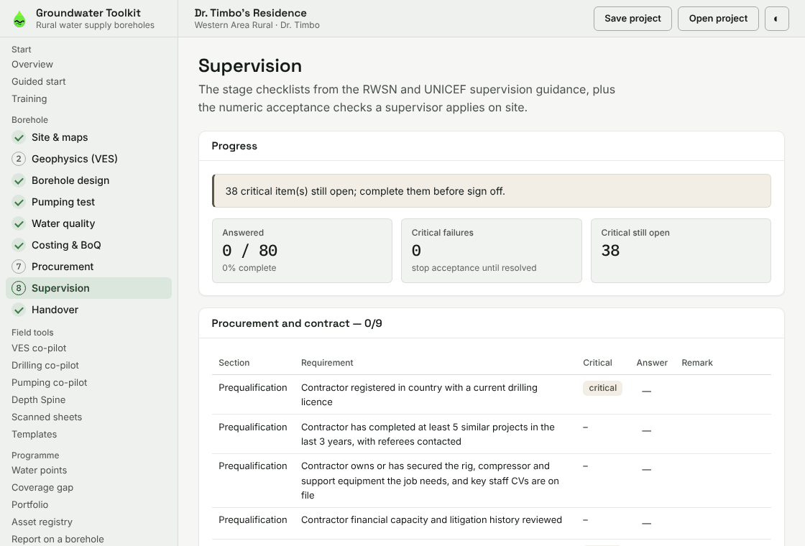
The acceptance boxes start empty, and a check goes into the record only when its measurements were entered: a check nobody measured is not printed as a pass. Verticality also needs the casing inner diameter from the disinfection calculator beside it, as it does in the browser app. The record is stamped PROVISIONAL while any critical item has no answer, and the stamp counts the blank ones stage by stage. An answer of No is an answer - the record states the failure - and so is N/A; a blank is what holds it back. That includes the stages not reached yet, so a record downloaded at the end of one stage stays provisional until the last stage is answered, or is issued on an override that says why.
The drilled metres reconciliation is blank until both the metres in the signed daily logs and the metres invoiced are typed, and only then checked and printed in the record. Those two figures and the checklist's answers go into the project file for the Portfolio page's contractor scorecards (section 10a), and so does the contract on the Procurement page with its variation orders and its Completion due (YYYY-MM-DD): the date the contract says the works are to be complete, as any extension of time granted leaves it, which the scorecards set the drilling log's completion date against.
8a. Depth Spine
In the browser app: #/spine.
The whole borehole on one depth axis: the cuttings log, the casing string and the water levels drawn against the same ruler, so the alignment between them is true rather than eyeballed. It opens once a drilling log is loaded.
The screened intervals are the only editable thing on the section. Drag a screen or one of its handles - or focus a handle and use the arrow keys, 0.1 m a press and 1 m with Shift - and the toolkit re-runs the design around it: the casing string, the annulus, the acceptance checks and the bill of quantities all come back recomputed. A screen moved here is a screen moved everywhere, including on the Borehole design page and in the completion report.
Three stages carry one professional opinion each - the design, the water quality verdict and the price to the client. Accepting is one press; overriding costs a value and a written reason, because the override is what ends up in front of the client with a name on it. Moving a screen clears the design and costing signatures, since a signature has to belong to the numbers that were in front of the person at the time.
The price on the costing stage is the Costing & BoQ page's price for the design on the section, in both apps: the unit rates as edited there, and its overheads, margin, contingency, VAT, exchange rate, overburden, mobilisation distance and counts, as they stand, or as they start if that page has not been opened yet. The Streamlit app's Costing page starts at a 100 km mobilisation distance and the browser's at 0 km, so the two apps' prices differ until it is set.
The water quality chart draws each determinand as a multiple of its own limit, so one line separates compliant from not. Against a range, such as pH 6.5 to 8.5, a value is drawn past the line on whichever side of the range it falls: the larger of the value over the top of the range and the bottom of the range over the value. The Dr Timbo sample's pH of 5.9 is drawn at 6.5 / 5.9 = 1.10 times its limit.
9. Handover
In the browser app: #/handover.
The closing report for the client and the community. Fill the site details in the sidebar once (they feed every page), then answer the handover questions: the pump installed, the tariff agreed, the WASH committee members (add rows as needed), any extra works or recommendations, and the three signatories. Results already produced on the other pages - the borehole design, the pumping test and the water quality verdict - attach to the report automatically; the page shows what is attached before you build it. At the foot of the page, Evidence bundle puts the borehole's sheets, documents and figures in one file for an auditor (section 9f).
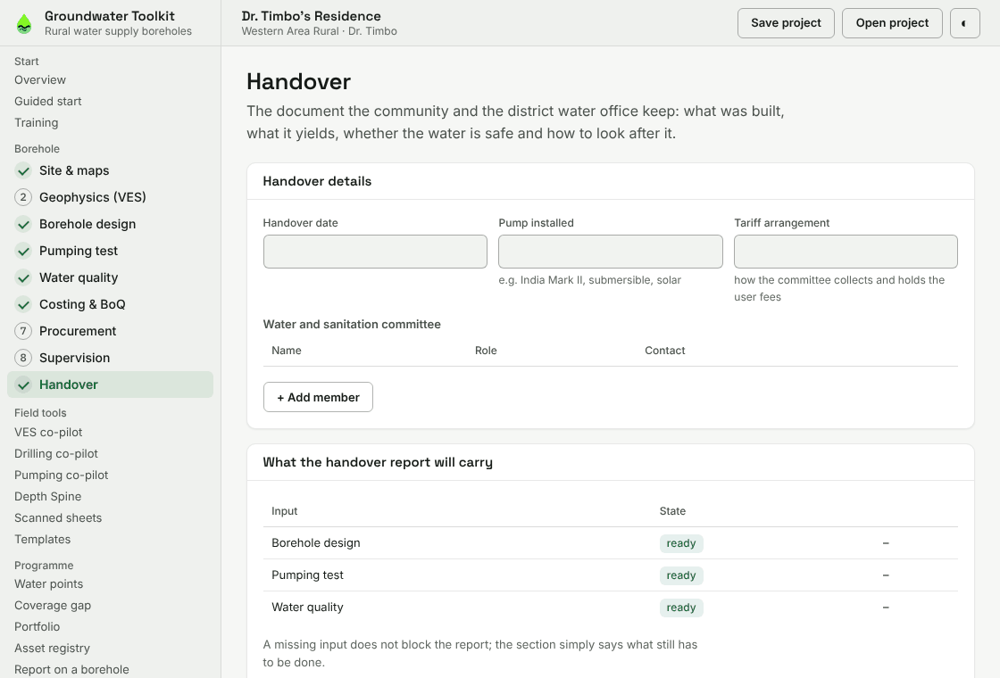
The Asset registry page (#/registry) gives
the borehole its identifier and prints its headworks plate. The
identifier is worked out from the GPS position, so the position has to
be in UTM metres (section 10). Its last character is an ISO 7064 MOD
37,36 check character, which catches every single mistyped character
and almost every pair of neighbouring characters typed the wrong way
round. Until this release that character was worked out slightly
differently from the standard. An identifier ending in the older
character is still read, on the page and from a saved project file,
with a note saying so and asking for it to be compared with the plate,
because while the older character is read a mistyped identifier can
pass as an older one. A project with no saved asset record now shows
its identifier with the corrected last character, so a plate printed
from it before carries a different last character from the page; the
rest of the identifier is the same. QUESTIONS.md item 15 asks what to
do about plates already made.
9a. Sanitary inspection
In the browser app: #/registry. In the
Streamlit app: the Asset registry page.
Once the borehole has an identifier (it needs a recorded position), the Asset registry page carries the sanitary inspection form: WHO's ten questions for a tubewell (a drilled borehole) with a handpump, such as whether a latrine is within 10 m, whether the apron is cracked and whether the pump is loose on its base. Answer each question as you find it at the wellhead: Yes where the risk is present, No where it is not. Leave a question Not answered if you could not see; it is not counted as a no. Enter the date and who inspected, then press Record the inspection. The inspection goes into the borehole's history like any other visit, so it is saved with the project, and the same form recorded on two phones merges into one record.
The score is the number of risks present: 0 to 2 is low, 3 to 5 intermediate, 6 to 8 high and 9 or 10 very high. A form with questions left open gives a range ("between 3 and 5 of 10") and says it is incomplete.
Under the form, one statement reads the latest inspection with the E. coli (or thermotolerant coliform) count of the water quality sample loaded on the Water quality page, and names the date of each. The count is graded A (none in 100 mL), B (1 to 10), C (11 to 100), D (101 to 1000) or E (over 1000). The two are then read together in a risk-to-health matrix to give an action priority: low, higher or urgent. Four things to know when you read it:
- A side that is not known gives no priority. With no sample loaded, or no E. coli result in it, the statement says the microbiological side is not known. If the borehole's history records a water sample, the statement names its date and says its results are not loaded; load that sample's sheet on the Water quality page to bring it in. If the history records a sample later than the one loaded, the statement names that one too. With no inspection on the form, it says the sanitary side is not known. The priority is given only where every possible answer on the unknown side would give the same one (a count over 1000 is urgent whatever the inspection says).
- Dates are read as YYYY-MM-DD and nothing else, in both apps. A form
in a project file whose date is written another way (
20240520,20/05/2024) is kept in the history but not used, and the statement says how many such forms there are. - A range is taken at its worse end. An incomplete form, or a count the laboratory did not put a number to ("TNTC", ">50"), can fall in more than one cell; the statement says so and takes the worse until the form is finished or the count is known.
- The matrix reads faecal contamination only. The statement ends with the sample's verdict on everything it tested, so an arsenic or manganese failure is not hidden behind a low sanitary priority.
The form's wording was written from WHO's 1997 surveillance volume as field
manuals reproduce it, not checked against the volume. The cells of the
matrix are a choice made in this toolkit (each is the worse of the two
sides' own WHO risk words), not a copy of WHO's figure. Both are listed in
QUESTIONS.md for someone with the documents to check. The asset record
(.docx) carries the statement, the latest form as recorded and the
reference.
9b. Service rounds
In the browser app: #/registry, the Service
rounds card at the foot of the page. In the Streamlit app: the Asset
registry page, under Many boreholes.
What is due. The registry schedules three visits for every borehole that is not decommissioned, and the page under This borehole lists them:
- a sanitary inspection every 6 months (the form in 9a);
- a routine inspection of the pump and rising main at the interval the borehole's design sets for its rising main (5, The rising main the design specifies): every 6 months in aggressive water or water nobody has analysed, every 12 in water that is not aggressive, and every 6 for a record that carries no rising main. Record one by choosing Routine inspection under Record what happened; a repair is not counted as one, since it records what was mended, not that the rest was looked at;
- a water quality sample every 12 months.
Each is counted from the last one recorded, or from commissioning where
there is none. A visit is due the day after its due date and overdue
30 days later; a borehole with no record to count from (nothing
recorded, or no commissioning date) is due now, and its condition is
"Not known", never "Working". These intervals are settings in
groundwater/data/defaults.json (the service section, and the design
rules' rising main intervals): choices made in this toolkit, not a
standard, which QUESTIONS.md item 18 asks the programme to confirm.
The borehole's record takes the rising main of this project's design whenever the design has one, on the page and in the saved project file, so load the water quality sheet before the record goes out. A borehole loaded from another project file keeps the rising main its file carries.
Whose round. Name the borehole's area mechanic under This borehole
and press Name the area mechanic; the name is saved with the project.
A borehole with none named goes to the mechanic named for its chiefdom
in Area mechanics by chiefdom, one chiefdom a line: the chiefdom, a
colon and the name (Koya: M. Kolleh). Chiefdoms are matched with
capital and small letters A to Z read alike; a line that cannot be read
is listed and not used, and of two lines for one chiefdom the first is
used. Boreholes with no mechanic either way are put on a round of their
own, No area mechanic assigned, last.
Which boreholes. This project's borehole and every borehole in the register above (Many boreholes), on the day in Round drawn up on (today unless you change it). Several files of one borehole are one stop, with their histories merged.
In what order. Each round starts at the stop that has been due the longest and goes each time to the nearest stop not yet visited, measured in a straight line, a tie going to the lower identifier. This puts the stops in an order; it is not an optimal route and knows nothing of roads, rivers or the rains, so a mechanic who knows the way should take it. A borehole with no recorded position comes last.
The round sheets (.docx) are one document with each mechanic's round from a new page. Each stop carries the identifier and the line a scan of the headworks plate begins with (check the two match before writing anything), where the borehole is, its condition on record and the distance from the stop before; then each visit due, with why and how often, and blank boxes for the readings: four for the routine inspection, the ten questions of the sanitary inspection form, four for the water sample, and the date, who visited and anything else found. Back from the round, record each visit on the Asset registry page with the date it was made.
The browser app keeps the chiefdom table and the day with the project; the Streamlit app saves the chiefdom table with the project and starts the day at today each time the page is opened.
9c. How long boreholes keep working
In the browser app: #/registry, the How long
boreholes keep working card at the foot of the page. In the Streamlit
app: the Asset registry page, after Service rounds.
What it reads. This project's borehole and every borehole in the register above (Many boreholes), as of the day in Analysed as of (today unless you change it; records dated after it are not read). For each borehole it counts the time from its first Commissioned record to its first failure:
- the first Failure recorded is the failure;
- a Repair or Returned to service with no failure recorded before it also counts as the first failure, on its own date: something had broken by then, and its date is the latest the breakdown can have happened. The summary says how many failures were found this way;
- a borehole that has not failed is censored: counted as working up to the last report of it working and not a day after. A report of working is its commissioning, a Sanitary inspection, a Routine inspection or a Water sampled: a visit that would have recorded a failure had it found one. A Note says nothing either way, and a borehole nobody has reported on since is not taken to be working;
- a borehole Decommissioned without a failure is censored on that day;
- a borehole with no report since its commissioning is censored at commissioning and adds no time; one with no commissioning date has no time to count from and is left out. The summary counts both.
Of several records on one day, a failure is read first, then a repair or return to service, then a decommissioning. Records dated before the commissioning, and records whose date cannot be read, are not read, and the summary counts the boreholes that carry them.
What it shows. Over all the boreholes, then by pump type, by contractor and by water chemistry: a curve of the share still working against years since commissioning (the Kaplan-Meier estimate), shaded with its 95 percent band, a tick where a borehole was censored; a line a group with its counts and the median time to the first failure with its band; a table of the same; and a table of the number still at risk and the share still working at 0, 1, 2, 3, 5 and 10 years. The band is pointwise, from Greenwood's variance on the log-log scale; there is none before the first failure. The median is the first time the estimate is at or below one half; where it never gets there the table says "not reached". The method's works are listed under References.
Too few to judge. A group with fewer than five boreholes followed
(the setting survival.min_at_risk in groundwater/data/defaults.json)
says it is too few to judge and gives its counts, never a curve. The
times the table states are the setting survival.at_risk_years. Both
are choices made in this toolkit, not a standard (QUESTIONS.md item
20).
The groups. The pump type and the contractor are those named on each borehole's record: name this borehole's under This borehole (Pump type and Installed by) and press Save the pump and contractor; they are saved with the project. Installed by starts from the contractor in the site details when the record is first drafted. Names are matched with capital and small letters A to Z read alike and nothing else, so "India Mark II" and "india mark ii" are one group but "India Mk II" is another. The water chemistry is the corrosivity the record carries from its design's rising main (5, The rising main the design specifies): aggressive, not aggressive, or not known (no sample, a sample the indices could not be computed from, or a record with no rising main). A borehole loaded from another project file keeps what its file carries. Boreholes whose record names no pump type or contractor, or whose water is not known, are shown as a group of their own but never compared.
Comparing groups. Where at least two groups that name a value each have five boreholes followed, they are compared by the log-rank test, which gives a chi-squared and its p-value. The p-value is how often curves at least this far apart would arise by chance if all the groups' boreholes failed at the same rate: it is not the chance that the groups differ, and it says nothing of why they might. A group none of whose boreholes was at risk when any borehole failed (a pump type introduced after the others' failures, say) has nothing to be compared on and is left out of the test, which says so.
The browser app keeps the day with the project; the Streamlit app starts it at today each time the page is opened.
9d. Reports from the plate and by SMS
In the browser app: the report page,
#/report/<identifier>, and the Reports from
plates and by SMS card on #/registry. In the
Streamlit app: the Asset registry page, after Look up an identifier.
The report page is in the browser app only; both apps take reports by
SMS and the file of reports a phone exports.
The plate's symbol. Under For the headworks (browser) or the
history (Streamlit), Report address takes the browser app's address as
the programme serves it, beginning https://
(service.report_url in groundwater/data/defaults.json, blank by
default, since no address can be known here; it is saved with the
project). With one set, the plate's symbol is a link to the report page
for that borehole, <address>#/report/<identifier>, and the caption under
it says so. Left blank, the symbol carries what it always has: the
identifier, the place and the position as plain text, which read with no
network and no app. An address that is not https://, has a blank or a
# in it, or has any character outside plain ASCII (write an
international domain in its xn-- form) is refused with the reason, and
neither the plate nor the round sheets are printed until it is put right:
the round sheets say what a scan of each plate begins with, and that
follows the address. A plate printed before the address was set still
carries the plain text, and nothing records which a plate carries, so
check the identifier, which both carry. A browser keeps the app for use with no network
only from an https address, and only on a phone that has opened the app
there once.
The report page. Scanning a linked plate opens the page on that borehole; the identifier can also be typed. The check character is checked as Look up an identifier checks it, so a mistyped identifier is refused with what it should have ended in, and no form is offered. Then choose one of four: Working, Broken, Slow or Bad taste or colour. The day (today unless changed, written 2026-05-01), a name, a note and a photograph are optional; the photograph keeps its capture time, its position where it or the phone gives one, and the SHA-256 of the file, as every photograph in the app does. Save the report keeps it on this phone, in the browser's own storage, with no network needed. It waits there, under Reports waiting on this phone, until the Asset registry page is opened here on that borehole's project, when it joins the history and leaves the queue. A report for a borehole whose project is somewhere else stays waiting: Export the reports (.json) writes the queue to a small file for the area mechanic or the district office, whose Asset registry page imports it in either app. The queue belongs to this browser, as the calibration in force does: no project file carries it, opening a project keeps it, and Reset everything deletes it, saying how many reports it would delete. Clear the reports waiting empties it, after asking; export the file first.
What each report records. Broken is a failure, so the borehole is "Not working" from that day. Working is a new kind of record, Reported working, which makes it "Working", as a failure report makes it the opposite, and counts as a report of it working to How long boreholes keep working (9c). Slow (Reported slow) and Bad taste or colour (Water quality complaint) say something is the matter without saying whether water comes, so they change nothing about whether it works; they are kept in the history for whoever goes to look. A report is merged by its content, as every record is: the same report saved twice, imported twice, or sent twice in a day by one sender in the same words is one record.
By SMS. A phone with no browser sends
BH SL-WAR-XXXXXXX-C BROKEN handle snapped
that is, BH, the identifier from the plate (here SL-WAR-XXXXXXX-C
stands for it), one word and any note. The
words are WORKING, BROKEN, SLOW, and TASTE, COLOUR, COLOR or BAD for bad
taste or colour, in capitals or not; a word in another language is added
to fault_reports.yaml by somebody who speaks it, never guessed. A
mistyped identifier is refused, with what it should have ended in. No
gateway is built or needed. Copy the messages into a plain-text file,
one a line, with the day and time received and the sender before BH
where the copy has them:
2026-05-01 08:14 +23276123456 BH SL-WAR-XXXXXXX-C BROKEN handle snapped
2026-05-02T09:00:00Z,Fatmata Kamara,BH SL-WAR-XXXXXXX-C taste brown water
and press Import SMS messages or a file of reports (browser) or upload
it (Streamlit). The day is read only written year, month and day: a line
dated 01/05/2026, which could be the first of May or the fifth of
January, or carrying two days, is refused. Day received gives the day
for lines that carry none; left blank, such a line is refused rather
than dated on the day of the import. Every line is shown in a table with
what became of it and why, and the summary counts what was accepted,
held and refused. A programme that runs an SMS gateway can pass what it
receives to groundwater.fault_reports.receive_messages (a list of
messages, each with its text and, where the gateway gives them, the
time received, day first, and the sender), which reads them as the
import does and merges nothing; it is optional, and nothing here needs
it.
Held for a person. A report by SMS that the registry's check reads only with a note (an identifier that checks only by the character identifiers were minted with before the check character followed ISO 7064 MOD 37,36, once that correction is in the toolkit) has nobody to read the note as it is typed, so it is held, not merged, until a person who has compared the identifier with the plate, or asked the sender, confirms it: Confirmed against the plate (browser) or the tick box of that line (Streamlit). The report page shows the note to the person at the plate, so a report made there is taken.
Into the registry. In the browser, accepted reports join the queue, and those for the borehole of the project open here join its history as the page draws. In the Streamlit app, Add N report(s) to this borehole's history adds those for this project's borehole; importing the same file again adds nothing. In both, the reports for boreholes in Many boreholes are shown in their histories there, without changing their files, and the Streamlit app offers the rest as a file of reports (Reports for other boreholes (.json)), which either app imports.
9e. Documents anyone can check
In the browser app: #/verify, Verify a
document under Reference. In the Streamlit app: the Verify a document
page. On the command line: groundwater verify.
What every document carries. Each document either app writes (the reports, the plate, the asset record, the certificate, the field kit, the desk study, the calibration report and the round sheets) carries a manifest inside the .docx file, which Word does not show. It records the day the document was issued (the day it was built, from the device's clock; a worked example built by a script gives none), which app and version wrote it, the calibration set in force, whether it was certifiable, issued on override or provisional and what was outstanding or overridden, every evidence file it was issued from with its SHA-256 fingerprint, and the fingerprint of every part of the document itself. The evidence of a document about the borehole is every sheet the project holds and the photographs the document embeds, by the fingerprint of the file as it arrived; a calibration report's is the project files pooled, a round sheet's those of the register; the field kit and the desk study list none.
The code. Every page's footer reads Document 0A1B-2C3D-5 - page n, except a cover's: a document with a cover carries the code and its QR symbol at the foot of the cover instead. The code is eight letters and digits and a check character, as the borehole identifier has. It is worked out from what the document says and records, so a copy whose text has been changed and its manifest brought into line no longer gives its own code.
Where the record is kept. Building a document keeps its issue record (its code and fingerprint, kind, title, day and readiness) in the project, which saves it in the project file, and, for a document about the borehole, in the borehole's asset record, which the Asset registry page lists under Documents issued; a record stored after the document was issued takes its issue records from the project. The app says the code when it saves the document.
Checking a copy. Open the page and choose the .docx. It is read on the device and sent nowhere; in the browser app the page works with no network. The page answers four questions:
- Did the toolkit issue it? Its manifest's fingerprint against the issue records held: those of the project open in the app, and of any project files added on the page (either app's, or the files of an asset register). With none, the page says it cannot confirm the document was issued.
- Has it changed since? Each part of the document against the
fingerprint its manifest recorded. A changed, removed or added part is
named: change one digit in the text and the page names
word/document.xml (the text of the document). A document opened and saved again in Word is a changed document, because Word rewrites its parts. - Was it certifiable or provisional? As the manifest records the certification gate when the document was issued.
- Which evidence was it issued from? Each file by name and SHA-256, so a copy of a workbook or a photograph can be checked against it.
A code read off a paper copy, or off its QR symbol with a phone, can be typed into Look up a code, which says what was issued under it, when, and how ready.
What it cannot catch yet. Until documents are signed (PLAN.md step 8.2), someone who rewrites a document throughout - its text, its manifest, its code and its symbol - makes a copy that agrees with itself. Only the issue record catches that, which is why a copy checked with no record is unconfirmed, never verified. Keep the project file, or the register's files, where a forger cannot reach them.
On the command line, groundwater verify report.docx --project project.yaml prints the same answers and exits 0 for a verified copy,
2 for one unchanged but not confirmed, and 1 otherwise; --code looks a
code up.
9f. One evidence bundle for the borehole
In the browser app: the Evidence bundle card at the foot of
#/handover. In the Streamlit app: the
Evidence bundle section at the foot of the Handover page. On the
command line: groundwater bundle.
What it holds. One .zip file with what an auditor asks for about one borehole:
raw/- every sheet the project holds, as it was uploaded, under the name it was uploaded with (less anything a folder cannot hold, such as:or?) and listed with what it is (VES field sheet, drilling log, pumping test sheet, water quality sheet);reports/- the documents this project issued in the session, the latest of each, and any issued earlier that you add on the card; each carries its own manifest (section 9e). The calibration report and the round sheets are about many boreholes and go in only if you add them;figures/- the figures each document embeds, taken out of it as it embeds them, named after the document;tables/- processed tables; neither app writes any yet, so the folder carries a note saying so;signatures/- signatures over sign-offs; nothing the toolkit writes is signed yet, so the folder carries a note saying so;manifest.json- the size and SHA-256 of every other file, the app and version that made the bundle, the day it was made (the device's day), the calibration set in force, each document's code, hash and readiness, how ready the documents are taken together (the least ready of those that had a certification gate) and the issue records the project held; its own SHA-256 is the bundle's hash;README.txt- what the bundle is and how to check it, by hand or with the toolkit.
The photographs are not in raw/: the apps keep a smaller copy of each,
not the file as it arrived, and the documents list each by the
fingerprint of the file as it arrived. A file you add that is not a
document the toolkit wrote, or one changed since, is refused rather
than put in, and the card says why. Both apps write a bundle by the same
rules, entry for entry, so the same files on the same day give the same
bundle in either, but for the app and version it names as its maker.
Checking one. On the Verify a document page, under Verify a bundle, choose the .zip. It is checked against the same issue records as a document: those of the project open in the app and of any project files added on the page. The page says:
- whether every file matches the size and SHA-256
manifest.jsonlists for it, naming each file changed, missing or added; - what each document's own check says (section 9e);
- what confirms each file from outside the bundle: a document by its
issue record; a field sheet or a figure by a confirmed document that
lists its SHA-256; the README and the folders' notes as the toolkit's
own text. A processed table rests on
manifest.jsonalone; - which evidence files the documents list that the bundle does not carry (the photographs, usually);
- how ready its documents are taken together, and who made it, when.
A bundle is verified only when every file in it is confirmed from
outside it. Someone who rewrites a sheet and manifest.json to match
makes a bundle that agrees with itself, but the document that lists the
sheet still lists the old fingerprint, so the sheet is no longer
confirmed; a bundle checked with no issue record at all is
unconfirmed, as a document is.
On the command line. groundwater bundle bh1.zip --folder ./bh1
packs a project folder laid out as the worked examples are (its raw/,
processed/ tables, figures/ and reports/); --raw pumping test.xlsx adds a sheet with what it is, --report, --table,
--figure and --signature add files, --project keeps the issue
records of a saved project file, and --date dates it (without it the
bundle gives no date). Without --folder the figures are taken out of
the documents, as the apps take them. groundwater verify bh1.zip --project project.yaml prints the same answers and every file with what
confirms it, and exits 0 for a verified bundle, 2 for one unchanged but
not confirmed, and 1 otherwise. The worked examples' packs,
examples/packs/*.zip, are evidence bundles; a worked example is not
issued, so they check as unconfirmed.
9g. The community handover sheet
In the browser app: #/handover, the
Community handover sheet card. The Streamlit app's Handover page has
the same section, and the two apps' sheets say the same.
The handover report is for the client and the district water office. This is one page for the community to keep, in plain English, with a picture:
- How much water. As jerrycans of 20 litres and as litres.
- Is the water safe to drink? One plain answer.
- Who to call. The committee members with a name or a number, then lines for the pump mechanic and the district water office to be written in by hand.
- If the pump breaks or the water changes. Who to tell, and the borehole's number as on its plate.
- Keep these away from the borehole. A picture of rings, each with its distance, and beside it what must be kept beyond each.
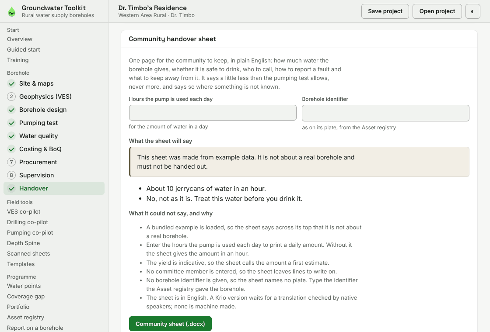
The card asks for two things the page does not already hold:
- Hours the pump is used each day. With it the sheet gives the amount for a day; without it, for an hour.
- Borehole identifier. As on the borehole's plate, from the Asset registry. Without it the sheet names no plate.
Before you build the sheet the card shows what the sheet will say (its two headlines) and what it could not say, and why. Read both. The second list is for you and is never printed.
How the sheet is careful, so that it can be handed over as it is:
- The amount of water is taken from the low end of the pumping test's safe yield and rounded down. It is never more than the test allows.
- Where the test was too short for the yield to be relied on, the sheet calls the amount a first estimate and says the borehole may give less, most of all in the dry season. With no test it says the amount has not been measured.
- Only water that passed its tests is called safe. Water that failed is to be treated, and the sheet names what was found. Water not tested, or not fully tested, is "not known yet", to be treated until it is.
- With a worked example loaded, the sheet says across its top that it is not about a real borehole and must not be handed out.
Where the programme has set a report address (section 9d), the picture also carries a square that a phone scans to open the report page for the borehole. The sheet prints no telephone number.
The sheet is in English. A Krio version needs a translation checked by native speakers and is not written yet.
10. Site maps
In the browser app: #/site, and the terrain
at #/site/terrain.
From the country down to the rock under the borehole. The Python app lays the page out in four tabs: Study area & setting, Topography, Subsurface and Interactive. The browser app's Site & maps page is one page of cards instead: the project and its location, where the site sits, the study area, geology and aquifers, topography and terrain, and the interactive map. The subsurface maps outside the reports are in the Python app for now. Enter the UTM coordinates in the sidebar to place the site star; the window slider sets how much ground the local maps cover. The easting and northing boxes take UTM metres only. A latitude and longitude typed into them (a pair no larger than 180 and 90) is not read as a position in either app: the page says so, in the same words the readiness gate and the asset identifier use, and offers to convert it, reading an unsigned longitude as west and saying it did. Or paste "lat, lon" into the box below and convert that. Every figure carries its data attribution, and the study area, geological and aquifer maps embed automatically into the geophysical survey and handover reports.
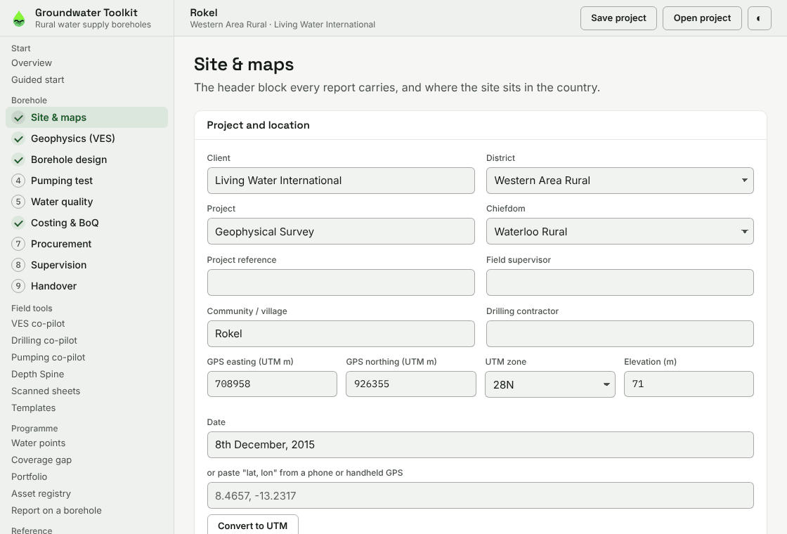
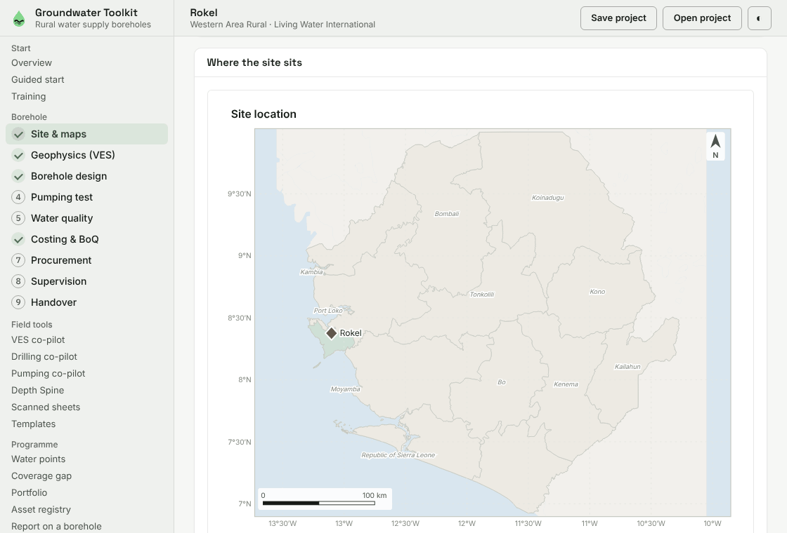
Study area & setting - the study area at a scale where the distances can be read off the scale bar, with the chiefdom boundaries around the site, the survey points, any water points already looked up, and a thumbnail of the country showing where in it this is. Beside it, the administrative location map, the geological setting (USGS Geologic Map of Africa) and the aquifer type and productivity map (BGS Africa Groundwater Atlas). Both of those datasets are published at 1:5,000,000, so on a window smaller than 120 km across the figure says on its own face how far a boundary on it can be trusted - the BGS user guide's own words are that its maps are "not suitable for providing detailed information on geology and hydrogeology at a sub-national (e.g. catchment) scale". Zoom them for context, not for a contact.
The geological key names the rock, not its age. The USGS layer carries seven classes for the whole country and they are ages - "Paleozoic Igneous", "Precambrian", "Holocene" - which tell a driller nothing about whether the ground stores water. A bundled crosswalk gives each class the formation and lithology the Geology of Sierra Leone map (MoWR/SALWACO 2017, 1:600,000, 28 formations) maps there, so the key reads "Freetown Layered Complex (Jf; USGS Pi)" and "Bullom Group (Q, Tb; USGS Qe)", and the crosswalk says what each rock means for a borehole: the Freetown gabbro stores nothing and yields only from fractures, the Bullom sands yield well and are the easiest ground in the country to contaminate.
Four things about that are worth knowing before you rely on it.
It annotates, it does not reclassify. The polygon and its boundary are still the 1:5,000,000 ones and are no more accurate for being better named - which is why the key keeps the USGS code beside the formation.
Where the two sources disagree, the figure says so rather than quietly picking one. The USGS layer dates the Freetown peninsula as Paleozoic; it is the Freetown Layered Complex, Jurassic, about 193 million years old. The map states both.
Two classes are deliberately left unnamed, and never appear in the key at all. "Ordovician" and "Silurian" have no vertices inside Sierra Leone - they are the Bove Basin in Guinea, inside the bundled window only because the clip box reaches 10.15 N - so putting a Sierra Leonean formation on them would be naming another country's ground, and because they are masked away when the map is drawn they are dropped from the key rather than sending you hunting for a colour that is not there. And "Precambrian", which covers most of the country, is named as what it mostly is (Leonean granite) with its own row saying plainly that it is not one rock: cross-tabbed against the BGS layer, 12 per cent of it is the Rokel River Group, a belt through Port Loko, Kambia, Moyamba and Tonkolili where the aquifer is fracture flow in indurated beds rather than a weathered zone. Where that matters, read the aquifer map beside it: the BGS layer separates the two where the USGS one does not.
Not everything is mapped. Two and a half per cent of the country's land area falls in no USGS polygon at all, all of it coastal: at 1:5,000,000 the coastal units stop short of the shore, across the Bullom shore and the Sherbro estuaries. That ground is drawn in its own tint and the key calls it "Not mapped at this scale" - it is not sea, and it is not a unit whose colour you have misread. The entry appears only when unmapped ground is actually in the window, so its absence means there is none, not that nobody checked.
Topography - no elevation model is bundled with this toolkit and
none is downloaded, so the terrain is worked out from files you supply,
and every figure names their source. Both apps read GeoTIFF and .hgt
tiles and analyse the ground around the site: the Python app on its
Topography tab, the browser app on the Topography and terrain card
(#/site/terrain).
None of it needs GDAL.
- GeoTIFF tiles (
.tif) in longitude and latitude (WGS 84), as Copernicus GLO-30 and USGS EarthExplorer SRTM tiles are published and as QGIS saves a clip: uncompressed or compressed with DEFLATE (with or without a predictor, as the published GLO-30 tiles are), LZW (what GDAL's COG driver and QGIS write by default) or PackBits, in strips or tiles, BigTIFF included. LZW reads more slowly than DEFLATE in the Python app (bench/README.mdhas the figures). A reprojected copy (UTM, for example) is refused rather than resampled, because it has already been resampled once: supply the tile as you downloaded it. JPEG, LERC, Zstandard and the other lossy or newer codecs are refused by name, and so are old-style LZW, a rotated grid or one placed by control points, scaled values, a GDAL mask of invalid cells, and a file cut into more blocks thanterrain.max_blocks. Each refusal is a sentence that names the file and says why, and what to do where there is something to do. - SRTM-format tiles (
.hgt, from NASA Earthdata). Keep the filename: the file carries no header saying where on Earth it is, soN08W013.hgtis placed by its name alone. - One grid (Python app only):
.asc, what any GIS exports, or longitude/latitude/elevation columns in.xyzor.csv. It is read whole and on its own, never joined to other files.
Where to get the tiles. Download them by hand; neither app links to them or fetches them. Copernicus GLO-30 tiles are in the copernicus-dem-30m bucket of the Registry of Open Data on AWS, and NASA SRTM and NASADEM tiles on NASA Earthdata and USGS EarthExplorer. The tiles on viewfinderpanoramas are void-filled compilations of several sources: declare them as Another source (see Credit, below).
Several tiles, and why. GeoTIFF and .hgt tiles are read a window
at a time, only the blocks the window meets, and several tiles are
joined into one model. The terrain analysis reads the square shown and
5 km beyond it on every side, 30 km across at the defaults, so a site
within 15 km of the edge of a 1-degree tile needs the tile beside it as
well, and a site near a corner all four tiles that meet there. The
Python app's wider topographic map (below), 40 km each way by default,
needs two to four tiles around most sites. Supply every tile the window
touches. Copernicus tiles abut; SRTM tiles share an edge row, which must
agree to the bit. Tiles that do not sit on one grid, or that come from
different products, are refused rather than resampled.
Supply tiles, not a mosaic. A mosaic or clip of tiles saved
without a no-data value fills its gaps with 0 m, and 0 m is what
Copernicus writes for the sea. So a 0 m area that meets the land along
a straight line of grid cells 150 long or more
(terrain.sea_straight_edge_cells) is taken for such a fill and treated
as a gap rather than sea, and the caption says how much of the square
that was; a smaller fill can still pass for sea. And unless the files
are Copernicus or SRTM-format tiles, recognised or declared, a drainage
line that ends in ground at or below 0 m is dashed, because that ground
may be a fill value rather than the sea. Supply the tiles as you
downloaded them and neither question arises.
Gaps, missing tiles and the sea. Ground no file covers is a gap,
and the read says how much of the window that is. The one exception is
the sea: Copernicus and SRTM publish no tiles for open sea, so a missing
tile is taken as sea, with no height, when the full shared edge of every
tile beside it is at or below 0 m; a missing tile with any land on that
edge stays a gap. The figures hatch it. The sea itself is ground at or
below 0 m (terrain.sea_level_m) joined to the edge of the analysed
square, so a tidal estuary counts as sea and the drainage lines end at
its head; ground at or below 0 m inland that is not joined to the edge
stays land. Heights below -1000 m or above 9000 m, and infinite values, are
read as no data and counted.
Credit. The source is recognised from the tiles' names together
with their georeferencing, so a renamed tile is credited as a file of
unstated source; a file laid out exactly like a GLO-30 tile but not
named like one asks you to say what it is. A file that looks like a
FABDEM tile is flagged: its makers license it for non-commercial use
only, the Copernicus notices may apply to it too, and the credit is
yours to add. The Source of the elevation model choice (detect it from
the file names, Copernicus GLO-30, SRTM, or another source in your own
words) lets you state the source, and what you state wins.
Copernicus tiles carry their licence's "produced using Copernicus
WorldDEM-30 ..." notice inside every figure, and its liability sentence
under the downloads, in the drainage lines' GeoJSON and, in the browser
app, in small print on the card (see THIRD_PARTY_NOTICES.md).
A .hgt tile is credited as an SRTM-format tile of unstated source
unless you say it is SRTM, because NASADEM and void-filled compilations
such as the viewfinderpanoramas tiles use the same format; declare those
as another source.
The window, the margin and the cap. The square shown runs 10 km
each way from the site by default (terrain.analysis_radius_km). It is
centred on the GPS fix; without one, on the chiefdom or district, and
with no location at all, on the middle of the files, and the read says
which. The analysis also works over 5 km beyond the square on every side
(terrain.analysis_buffer_km), so that the edge of the analysis does
not bend the drainage lines: the lines are traced over the whole and cut
where the map ends. Checked against an 11 km margin on three 10 km
windows of a real Copernicus tile, no undashed line cell in the square
shown appeared or disappeared, and 0 to 100 of them kept a changed
upslope area. At the defaults the analysed square is about 983 by 979
cells at 1 arc-second. It may hold at most 1,500,000 cells, margin
included (terrain.max_cells), in both apps alike, so that whether a
window is refused does not depend on which app ran it. A radius whose
window would hold more is refused, and the refusal names a radius that
fits: at 1 arc-second and the default margin, 13.7 km south of about 8.3
degrees north and 13.6 km north of it. That radius is worked out from
the largest square window the cap holds, 1,223 cells each way, sized by
a cell's shorter side, less the margin and rounded down to a tenth of a
kilometre, so a radius a little wider, up to about 13.7 km, may still
fit. Coarser tiles fit a wider radius.
Analysing the terrain. Add the tiles: in the Python app with the
uploader on the Topography tab, in the browser app by dropping them on
the card or picking them (any file can be picked; the card reads each
one to see what it is). Each GeoTIFF and .hgt file is read for its
layout as soon as it is added, so a refusal, or a question about its
source, shows beside its name before anything is analysed; the browser
card also lists each file's size and the source detected. Set the
radius of the square shown (1 to 50 km) and the drainage threshold
(0.05 to 100 km²; 0.5 km² unless terrain.drainage_area_km2 says
otherwise): a drainage line starts where more than that drains to a
cell. Then press Analyse the terrain. The progress names each stage
as it runs, from reading the elevation model to working out curvature
and wetness and looking for lineament candidates, and in the Python app
then each figure as it is drawn. In
the browser app the analysis runs in the background, with the bar
across the top of the page and its Cancel, which stops it and keeps
nothing. What the read found comes first: the files read, the cells and
their size, how much of the window is a gap or taken as sea, and any
heights read as no data. Then the four terrain figures, the two of the
lineament candidates and the survey plan laid across them, each with the
same captions under it in both apps.
In the browser app a new drainage threshold redraws the lines without analysing the ground again: the card traces them afresh on the page from the analysis it holds, and redraws the relief figure and the GeoJSON with them, and lays the survey plan again, which keeps clear of the lines. The lineament candidates do not depend on the threshold, and stay as they are. The Python app keeps the figures but not the analysis, so a new threshold there needs another press of the button. The lines come out the same either way. A new radius, other files or another declared source need a new analysis in both apps, and the figures drawn from the old files or the old source are taken away.
The figures. Everything on them is worked out from the elevation model alone, so it is a candidate to check on the ground, not a mapped stream, spring, wet patch or fracture. The heights are of a surface, not always of the ground: Copernicus GLO-30 is a surface model whose heights include tree canopy and buildings, SRTM-format heights come from radar and include part of them, and the heights of any other file should be taken to include them. Each figure draws its credit line and that caveat inside the image, so both go with a downloaded PNG or SVG; the captions under it say the rest. On every map the sea is pale blue, a missing tile taken as sea the same blue hatched, and gaps grey.
- Shaded relief and drainage lines. The land coloured by height
under a hillshade lit from four directions (GDAL's multidirectional
composite), with contours at an interval chosen for the relief, and
the drainage lines, drawn wider as their Strahler order rises. Water
is routed over a surface whose closed hollows are filled to their
spill level, and across flat ground by its distance from higher and
lower ground rather than by slope. Land the fill raised by 1 m or more
(
terrain.fill_note_m) is tinted purple, and a stretch of line routed across a filled hollow or a flat is drawn paler. Those are the least certain stretches, because a hollow or a flat may be real or made by canopy, buildings or an embankment that the model records as ground, and they are most of the lines: in three 10 km windows of a real Copernicus tile, 79 to 87 percent of the drainage-line cells were routed that way. A dashed line may take in water from beyond the analysed square or from behind a gap in the model (and, for files other than Copernicus or SRTM-format tiles, from behind ground at or below 0 m, which may be a fill rather than the sea), so its upslope area and order may be larger or smaller than shown. The captions give the share of the square taken as sea or as a 0 m fill, the share of the line cells drawn paler and of the land tinted, and any cells on flats left without a direction. - Topographic wetness index, ln(a / tan β), with water routed to a
single neighbour (D8): high values mark ground where water gathers
and lingers. Slopes gentler than 0.001 (
terrain.flat_tan_slope) are taken as 0.001, so a swamp floor still shows. Lightened cells receive water from beyond the analysed square or from behind a gap, so their values are uncertain. - Curvature, worked out over about 90 m
(
terrain.curvature_spacing_m), per km, in two panels. Down the slope (profile), positive is convex, where flow speeds up, and negative concave; across it (tangential), negative is converging flow, the hollows, and positive diverging, the spurs. Ground flatter than 0.001 is not drawn. - Shaded relief from four directions: four panels, lit from the west, north-west, north and north-east (270, 315, 0 and 45 degrees) at 45 degrees above the horizon, so that none is lit from the bottom of the map, where light makes valleys read as ridges. A straight feature shows most strongly under light across it and fades under light along it; anything seen here is inferred from the terrain, not confirmed by geophysics.
- Lineament candidates: straight valleys (blue) and straight ridges (orange) at least 600 m long, drawn over the relief in grey. In crystalline basement a borehole finds water where it meets a fracture zone, and a fracture zone often shows on the surface as a straight valley, a straight ridge or valleys that line up. The candidates are found in the relief smoothed over about 65 m and lit from the four directions of the panels above: where the shading changes sharply along a line, compared with the ground within 1.5 km of it, and the ground bends across the line, a valley where it bends up and a ridge where it bends down. Pieces that line up across a gap of up to 300 m are drawn as one. They are inferred from terrain, not confirmed by geophysics, and the figure says so inside it: a fracture zone, a geological contact, a dyke, a road or a field boundary can each draw one, and on a surface model a line of trees can too. The method favours no direction (tested on terrain that has none), but it draws candidates wherever the relief has straight stretches, fractured or not, so they are where to look first, not where to drill.
- Strike of the lineament candidates: two roses, valleys and ridges, of the length of the candidates in each 10° band of strike, measured clockwise from grid north. A strike has no way along it, so each band is drawn twice, opposite itself; each petal's area, not its reach, goes with the length, and both roses are on one scale, the rings naming the lengths. A band that stands out is a direction many straight features share, which is worth comparing with the structural trends of the geological map. The rose is drawn only where there is a candidate.
- Survey plan, round the site where it has a GPS position: profiling lines across the lineament candidates nearest the site, at right angles to their strike, and soundings proposed on them, all inside the 500 m within which the water point check counts a source as serving the community. Each line runs through its candidate's point nearest the site, and so through the site itself unless the candidate ends short of it: 400 m long, or as long as the service radius leaves room for, with a station every 10 m, the crossing one of them. A candidate that a line already crosses at right angles (their strikes within 20°) gets no line of its own, and at most two lines are laid. Each line has three soundings: on its candidate, and 50 m along the line to either side, because a candidate is placed from the terrain only to within a cell or two. A sounding is a place a borehole may go, so it is kept the distances of the site separation table from what the page maps: 50 m from a mapped borehole, 20 m from a dug well, 10 m from any other water point, 20 m from surface water and from the drainage lines, which stand for the streams, and 1,000 m from the sea. One inside such a ring moves along its line to the nearest clear place, no further than 20 m; where there is none, it is left out, and the caption says how many and why. The water points are those loaded on the Water points page when the terrain was analysed. A borehole's 50 m ring reaches into the service radius from as far as 550 m from the site, so a lookup over less than 550 m round the site cannot see every water point a peg must keep clear of: the caption then says how far the lookup went and asks for another over at least 550 m (or a check of each peg on the ground). A site moved after the lookup is covered only as far as the lookup still reaches round it. Latrines and soakaways, buildings, refuse dumps and burial grounds are on no map here: check each peg for them on the ground. Each sounding is planned with the VES co-pilot's AB/2 series to the spacing at which the depth-of-investigation rule reaches 60 m (AB/2 = 120 m, a 240 m spread), the spread laid along its candidate's strike so that it reads the zone along its length. With no candidate within the service radius, one line runs through the site across the strike of the 10° band holding most of the candidates' length, and no sounding is proposed: each goes where the profile finds a zone to sound. With no candidate in the square shown, or a site with no GPS position, the caption says why there is no plan. A table under the figure lists each proposed sounding's position, its line and its distance along it, and what it was moved clear of.
Downloads. Each figure downloads as PNG and SVG, and the drainage
lines and the lineament candidates as GeoJSON (Drainage lines
(GeoJSON) and Lineament candidates (GeoJSON) on the browser card).
Each GeoJSON feature is one piece of a line inside the square shown,
with its link number and part, its Strahler order, where it ends, its
upslope area in km² and its length in metres, edge_contaminated where
it is dashed on the figure, and flat_routed_cells and filled_cells:
its cells routed across flats or filled hollows, and those of them the
fill raised by 1 m or more. The file's description says what the lines
are and are not, and the file carries the figures' credit line. Each
feature of lineament_candidates.geojson is one candidate as a straight
line, with its kind (valley or ridge), its length_m, its strike_deg
from grid north (0 to 180), the straight pieces linked into it, and
cut where the square shown cuts it; its description says that the
candidates are inferred from terrain, not confirmed by geophysics. The
layers themselves are not offered as GeoTIFF yet.
The survey plan downloads as GPX (survey_plan.gpx, Survey plan (GPX)
on the browser card) and as a GeoLibre project
(survey_plan.geolibre.json, Survey plan (GeoLibre)). The GPX holds a
waypoint at the site, at the centre of each proposed sounding (VES 1,
VES 2 and on) and at each line's two ends, and each line as a route
with a point at each station, named by its line and its distance along
it (L1 000, L1 010 and on), so that a phone's GPS app that imports
GPX can walk the team to each peg. Each sounding's description says
where it lies, any move, and its AB/2 and spread. The GeoLibre project
draws the service radius, the separation ring round each mapped water
point within reach, the lines, their stations and the soundings, over
the candidates and the water points near the site, and opens on the
service radius.
Nothing is saved with the project. The tiles, the radius and threshold chosen on the page, the figures and the drainage lines belong to the session: loading a project drops them in both apps, as opening a sample project or Reset everything on the Settings page does in the browser app, so add the tiles again to work the terrain out afresh; the same files and settings give the same figures. The relief, the lineament candidates, their rose and the survey plan go into the desk study, below; the topographic map and the terrain figures are not carried into the other reports yet, and both apps say so on the page.
The desk study. Build the desk study (.docx), at the foot of the page in both apps (under the four tabs in the Python app, the last card on the browser's Site page), writes the eleventh document: what is known of the site before anyone travels to it. Every copy carries the stamp PRE-FIELD DOCUMENT - NOT A SURVEY RESULT on the page after its cover, whatever the project holds, since nothing in it was measured on the ground. It holds:
- the site's names and its position, in degrees and in UTM, on the cover;
- the area maps every report opens on, with the aquifer and geology maps;
- the geology and the aquifer class under the site, the formation the crosswalk names and what that rock means for a borehole, and the class's published yield range;
- the terrain and its lineament candidates, from the last Analyse the terrain press: how many, how long, the 10° band of strike that holds the most of them, how many come within the 500 m the site serves, and the relief, the candidates and their rose as the press drew them;
- the water points the Water points page holds, within the radius it searched (the lookup's own radius, in both apps, even if the radius box has been changed since): how many are working, whether a working improved source lies within the 500 m the site serves, the broken ones there to assess for rehabilitation, and the nearest 15 in a table, with the year each was installed where the inventory records one (a year recorded as 0 is left blank). The WPdx+ inventory as read here records no depth or yield, and the document says so;
- the earlier projects the Portfolio page holds within 5 km, nearest first, with their status, depth, safe yield and water quality. A project file whose easting and northing hold a longitude and a latitude in degrees has no position in either app; the desk study names it and says to convert the degrees on its site details and save it again;
- the odds of a working borehole from the ground alone, before any survey, in the words of the geophysical report's odds;
- the survey plan's lines and soundings, with its figure;
- what the field visit is to check.
Each part says what it waits for where the page holds nothing for it: no GPS position, no water points loaded, no portfolio loaded, or no elevation model analysed. A desk study built after the site has moved more than a metre from where the terrain was analysed leaves the terrain and the plan out, and says to analyse the terrain again.
On a phone, and from a copy opened as a file. If the browser app's background engine stops partway through the terrain, most likely for lack of memory, the card says so and suggests a smaller radius, rather than running the analysis again on the page, where it could take the tab down with it. A device that reports 2 GB of memory or less asks before it analyses a window of more than 1,000,000 cells; the default window at 1 arc-second is just under that. A copy opened as a file has no background engine: the card says before a run that the page will be held until the analysis finishes, and Cancel is read only between reading the files and analysing them.
Settings. The radius and the threshold are set on the page; the
rest are under terrain in the project's configuration. Most of these
defaults are provisional choices that want a hydrogeologist's or the
owner's confirmation; the changelog lists which, and why.
| Setting | Default | What it sets |
|---|---|---|
terrain.analysis_radius_km |
10 | the radius the page starts at |
terrain.analysis_buffer_km |
5 | the margin analysed beyond the square shown |
terrain.max_cells |
1,500,000 | the cap on the cells analysed, margin included, and on the cells the wider map draws before it thins them |
terrain.max_blocks |
100,000 | the most blocks a file may be cut into, or a window may need decoded |
terrain.sea_level_m |
0 | ground at or below this, joined to the edge, is sea |
terrain.sea_straight_edge_cells |
150 | a 0 m area meeting land along a straight line this many cells long is a fill, not sea |
terrain.implausible_below_m, terrain.implausible_above_m |
-1000, 9000 | heights outside these are read as no data |
terrain.drainage_area_km2 |
0.5 | the drainage threshold the page starts at, in km² |
terrain.fill_note_m |
1 | the raise at which filled land is tinted |
terrain.flat_tan_slope |
0.001 | the least slope (as a tangent) the wetness index takes, and the slope below which curvature is not drawn |
terrain.curvature_spacing_m |
90 | the distance curvature is worked out over |
terrain.hillshade_azimuths_deg |
225, 270, 315, 360 | the suns of the composite hillshade |
terrain.hillshade_panel_azimuths_deg |
270, 315, 0, 45 | the suns of the four panels |
terrain.hillshade_altitude_deg |
45 | the height of the sun above the horizon |
terrain.hillshade_z_factor |
1 | the vertical exaggeration: none |
terrain.lineament_smoothing_m |
65 | how far the heights are smoothed before lineaments are sought |
terrain.lineament_contrast_km |
1.5 | the side of the square a centreline cell is compared with |
terrain.lineament_share |
0.4 | the share of centreline cells kept, the strongest against their surroundings |
terrain.lineament_min_curvature_per_km |
0.1 | the least bend across a line, per km |
terrain.lineament_turn_deg |
30 | the most two neighbouring cells of one line may turn |
terrain.lineament_straight_m |
90 | how far a cell may lie from the straight piece it is on |
terrain.lineament_piece_m |
300 | the shortest straight piece |
terrain.lineament_min_length_m |
600 | the shortest candidate drawn |
terrain.lineament_link_angle_deg, terrain.lineament_link_offset_m, terrain.lineament_link_gap_m |
10, 90, 300 | how closely pieces must line up, and across how long a gap, to be linked |
terrain.survey_lines |
2 | the most profiling lines the survey plan lays |
terrain.survey_line_m |
400 | the length of a line, where the service radius leaves room for it |
terrain.survey_station_m |
10 | the spacing of a line's stations |
terrain.survey_flank_m |
50 | how far along the line the flank soundings are from the crossing |
terrain.survey_move_m |
20 | the furthest a sounding moves along its line to clear a separation ring; under half of survey_flank_m |
terrain.survey_cross_within_deg |
20 | how far from parallel two candidates may be for one line to cross both at right angles |
terrain.survey_target_depth_m |
60 | the depth each sounding is planned to see to, by the depth-of-investigation rule |
The topographic map and the ground profile (Python app only). The
Topography tab also draws a topographic map over the wider window the
slider at the top of the page sets: a hypsometric tint, hillshade,
labelled contours at an interval chosen for the relief, and your
soundings as spot heights over it, from tiles or from one .asc or
.xyz grid. The map is framed on the whole square asked for, with a
sentence saying how much of it the files cover. When the window holds
more cells than terrain.max_cells, the map draws one cell in every few
each way, without averaging, and says so. Below that, the ground
profile along the traverse, which needs no elevation model at all: it
is the elevation recorded at each sounding, in order along the line,
measured at the pegs and straight between them. Both apps' geophysical
survey reports carry the profile. The Python app also analyses one
.asc or .xyz grid, cut to the same window and held to the same cap
as tiles; where the grid ends before the window does, the square shown
stops with it, and the read report gives the radius it reached.
Subsurface - maps of this site rather than of the country, every one drawn from the soundings themselves: depth to bedrock, interpreted aquifer thickness, the bedrock surface as a landform (a low in it is a buried valley, which basement groundwater drains towards), aquifer protective capacity in its standard longitudinal-conductance classes, transverse resistance, and an iso-resistivity map at whichever electrode spacing every sounding measured. Then two sections along the traverse: the interpreted geoelectric section, drawn at the soundings' surveyed spacing rather than evenly spaced, and the apparent-resistivity pseudo-section, which involves no inversion at all - each point is a reading at the station and spacing it was taken with, so it is still right if the inversion is wrong. Its vertical axis is AB/2, the electrode half-spacing, and is labelled as such rather than converted to a depth. Both sections run eastwards along the line, or northwards where the line is within a degree of north-south, whatever order the soundings were entered in, so a few tens of centimetres of GPS scatter on a north-south line no longer turns the section round.
Every interpolated surface is blanked outside the ground the soundings enclose. A contour past the last peg is the interpolator continuing a trend, and somebody will site a borehole on it. Where the soundings sit too far off the best-fit line to read as one section, the page and the figure both say so rather than letting the picture imply a traverse nobody walked.
Interactive - the GeoLibre project file (see below).
10a. Area analysis: where to drill, and whether to drill at all
Three pages answer the questions that come before a borehole is sited, using open national datasets rather than your own files.
Water points - before drilling at a site, check what is already there. Set the GPS, choose a search radius, and press Look up water points: the page queries the Water Point Data Exchange (WPdx+) for mapped sources around the site. It returns one of three recommendations: a broken improved source nearby is a rehabilitation candidate (usually far cheaper than a new borehole), a working source inside the service radius means the community may already be served and the need should be verified, and otherwise new construction is justified. The lookup needs a connection; if there is none, download your country's WPdx export once and upload the CSV instead - the analysis is identical and runs offline. The points kept are those within the radius the lookup searched: change the radius afterwards and the page goes on judging, and the desk study quoting, the radius searched until Look up water points is pressed again, and the browser app says so under the box. A row whose latitude or longitude is blank, not a plain number ("nan", "inf"), or past 90 or 180 degrees (UTM metres in the degree columns) is set aside and counted in a note, in both apps.
Coverage gap - where are the underserved people? Ranks districts, or chiefdoms for finer targeting, by population per functional water point (2015 census populations joined to WPDx points), as a choropleth map and a ranked table. Higher means more people per working source means higher priority. The planning view under it projects the census to the year planned for and says how old the survey behind each area's points is in that year. A survey dated after the year planned for (a 2023 survey when planning for 2018, say) says nothing about it: it is left out of the median age and of the points counted as recently surveyed, and an area every dated survey of which is later is labelled Surveyed after the plan year.
Where to drill next, within a budget (PLAN.md step 6.1) - at the foot of the Coverage gap page, the areas of the ranking above, at the population of the year you plan for, are chosen between for a drilling budget. It needs a borehole priced first: estimate one on the Costing page (section 7), and every borehole here is priced as that one, with its rates, its percentages and its mobilisation distance, its depth held at the estimate's. Then type the Budget, US$, as contract prices with any VAT and before contingency. For each area:
- Unserved people: its population less 500 for each functional mapped point, never fewer than none. 500 is the handpump figure of the coverage map's service classes (the Sphere handbook's, which the toolkit states rather than holds), and a point that serves more or fewer is not told apart. The boreholes the unserved people justify are that many over 500, rounded up, each serving up to 500 and the last the rest.
- Ground: the BGS aquifer class that covers the most of a 16 by 16 grid of points over the area (the points inside it), and the USGS unit that covers the most of that class, with the share of the area's points on the class. Surface water and ground off the map do not count; an area with nothing else has no known odds and is left out, never given the even chance a point off the map gets.
- Chance of a working borehole: the prior for that ground, as the Geophysics pages give it before any survey (section 5a), from the calibration set in force where one is.
- US$ per working borehole: the Costing page's mean completed borehole, and its mean dry attempt for each dry attempt expected before a working one, to the cent. An Access, US$ per attempt typed for an area (a column of the table in the browser; a table under Access, US$ per attempt in the Streamlit app) is added once for each attempt a working borehole there is expected to take. With none typed, the page says access is not modelled.
The choice aims at the set of boreholes that serves the most people within the budget at those expected costs. People served per dollar is the plan's expected people served per dollar: the chance of success times the people a working borehole serves, over the expected cost of one attempt, is the same figure. With up to 40 candidate boreholes (each area's, up to what its people justify and the whole budget could buy) the choice is exact; with more it takes the boreholes in order of people per dollar, each one that fits in what is left, and says how far it can be from the best (the linear-programming bound). A national budget usually has more than 40. Where areas tie, the one first in alphabetical order is served first, so areas on the same ground take the budget in that order.
The table lists every area, the chosen first: its unserved people, its
ground, its chance, its cost per working borehole, the boreholes chosen
of those it justifies, the people they serve, the people per US$ 1,000
its first borehole serves, and why it is in or out: all its boreholes,
some of them and the next one costs more than the budget left, out
because one costs more than what is left, out for lower value per dollar
than every borehole chosen, no unserved people, or odds unknown. Above
it the page says what the budget buys, how it was chosen, and the next
borehole worth buying with its cost per extra person served. It also
says plainly that chiefdom populations are too coarse for access
distances: an area's people are one number, so the people a borehole
serves are the handpump figure, not the people within reach of it,
until settlement-level population (PLAN.md step 6.2) is added.
Download the choice (.csv) saves the table and then every sentence,
one to a line. The browser keeps the budget and the access costs in the
project file with the year and the growth rate; the Streamlit app keeps
none of them. The 500, the 40 and the 16 are
allocation.people_per_borehole, allocation.exact_max_items and
allocation.ground_grid in defaults.json or a config.yaml.
Portfolio - upload several saved project files at once for the programme view: a status map, headline figures (success rate, mean cost per metre), a comparison table and a one-page brief for any single site. Files saved by either app are accepted, so a programme run across both still pools into one view.
Contractor scorecards (PLAN.md step 6.3) set each drilling contractor's boreholes out across the files, from what each project recorded of the contractor's work, and Build the contractor scorecards (.docx) writes them up with how each figure is worked out. For each contractor:
- Metres: the metres invoiced against the metres in the signed daily logs, from the drilled metres reconciliation on the Supervision page (section 8), over the boreholes where both were typed, and how many claimed more than 3 m over the logs.
- Failed acceptance checks: the supervision checklist's items answered No in the stages the contractor works in, mobilisation to demobilisation, out of the boreholes with any of them answered; a second table names the items that failed.
- Variation orders: those recorded on the Procurement page, the signed ones with the value they add to the contract sum and the unsigned ones counted apart.
- Time: the drilling log's completion date against the Completion due (YYYY-MM-DD) typed on the Procurement page. Write the log's date as YYYY-MM-DD or with its month by name (13th May, 2018): one written in figures alone (05/06/2018) can be read two ways round and is not read.
- Dry holes: the boreholes that did not succeed as the odds define success and, on those forecast before drilling (section 11), how many the forecasts expected, with the range the count would fall in at least nine times in ten if the forecasts were right.
Every figure says how many boreholes it rests on, and one that no file
records reads "Not recorded", never nought. A contractor is ranked, by
its dry holes against the forecast, only on at least five forecast
boreholes whose outcome is known (ledger.scorecard_min_boreholes);
the rest are listed unranked with the reason, and the boreholes whose
files name no contractor are listed together. The contractor is the one
in the site details, else the one on the drilling log, grouped by its
name as written: two spellings of one name make two scorecards. A file
saved before this version gives only the outcome and the forecast its
ledger kept. As with the calibration report, the Streamlit app offers
the download for the files on the page when it was built.
At the foot of the page, Predictions and outcomes pools the files'
ledgers (section 11): how many survey points were predicted and how
many drilled, a table of the drilled ones with the depth to basement
predicted and found and the chance predicted beside the outcome, and
the whole pooled ledger as a .json file. A point found in two files
(two copies of one project) counts once, and the summary says how many
were. The copy counted is the one whose borehole outcome is best
established: a pumping test over the driller's recorded status, and that
over an outcome not known yet or none; between copies alike in that, the
one recorded before drilling, then the one with more of its outcome
recorded, then the later recording. So the result does not depend on the
order the files were added in. Where the copies disagree on what the
borehole found but give it one reference and completion date, the
summary says so: one of the files holds an older record. Two projects
whose survey points share a name and a place (a dry hole and its
replacement surveyed in one village a year apart, the VES sheets
numbered again and carrying no coordinates) are told apart by their
ledgers' identities (section 11) and are counted as two. Two such
projects whose predictions were first recorded on the same day share an
identity, and a hole and its replacement saved in copies of one file
share a point, so the pool takes them for copies and counts one
borehole. Where copies disagree and give the borehole different
references or completion dates, or neither, the summary does not call
one of them an older record: it says they may be a log corrected between
two saves or two boreholes, and that the borehole of one of them is not
counted. Files saved before ledgers had an identity cannot tell two
projects from copies of one at all: if their copies disagree, the
summary says the borehole of one of them may not be counted.
Under it, Calibration scores the pooled forecasts against what was
drilled (PLAN.md step 5.2), and Build the calibration report (.docx)
writes them up as a Word document. Only predictions recorded before
their borehole was drilled are scored. Each outcome records the
definition of success it was judged at (odds.success_yield_m3_per_h
in the project it came from); one judged at another definition than the
one in force here, or recording none, is counted and left out of the
chance of success and the hit rates, as a calibration set leaves it
out, and the report says how many there were.
- The depth to basement. A calibrated P10 to P90 band holds the depth found about four times in five. The report counts how many boreholes found basement inside the band, above it and below it, and says whether that count is within what a calibrated band would give nine times in ten on as many boreholes (6 to 10 of 10), or shows a band too narrow or too wide. A borehole that stopped short of basement is judged only once it has passed the band's P90. The figure sets each depth found against the depth the best fit predicted, with its band; a point whose best fit resolved no basement is drawn hollow at the middle of its band (P50) instead.
- The chance of success. The Brier score of the forecasts (0 is perfect; an even chance every time scores 0.25) beside the score of the prior alone, and a reliability diagram: in each band of forecast chance, the share that succeeded. On calibrated forecasts the points lie on the diagonal.
- Hit rates by geology unit, survey team and contractor: the share of drilled boreholes that succeeded, with the mean chance forecast beside it.
- Too few to judge. Under 10 boreholes for the band or the odds,
and under 5 known outcomes for a hit rate, the report says there are
too few boreholes to judge and gives the counts. Both numbers are
settings (
ledger.min_boreholes,ledger.min_group).
The report changes nothing the toolkit predicts. In the Streamlit app the download is offered for the files on the page when it was built; change the files and build it again.
Last on the page, Calibration sets (PLAN.md step 5.3) is where the pooled ledgers start to change what the toolkit predicts, and only once a named person says so. It is shown even with no files on the page.
- The set in force. Every report reads its priors (the chance of a working borehole before the survey is counted), its resistivity edges (the clay and fresh basement cut-offs, for each geology unit) and its suitability weights from the calibration set in force. Until someone adopts one, that is the toolkit's provisional default, adopted by no one and not calibrated against drilled outcomes. The card names the set in force and lists what it changes besides the priors.
- Fit a set to the pooled ledgers fits all three to the drilled
points whose success is known, judged at the success yield in force.
Every fit starts from the provisional default, so a borehole is never
counted twice. A prior row, or an edge of a geology unit, needs 5
boreholes (
ledger.fit_min_boreholes), and the weights need 10 boreholes that succeeded and 10 that failed (ledger.fit_weights_min_each); the rest stay as they are. - The review sets the fitted set beside the set in force: how many boreholes it used and left out, what it fits, and a table each of the priors (the provisional table's rate, the rate in force and the fitted one, with the number of boreholes it is worth), the edges (the layers under and over each, and how many layers each edge misreads against the drilling logs) and the weights. A set that fits nothing has nothing to adopt.
- Adopt it. Type the name of the person adopting it and press Adopt the set and put it in force. The organisation that issues the set and a contact (an email address, say) go in the file too; the organisation starts as the one the reports are branded with, and either may be left blank. The set is numbered after the set in force, names the set it replaces, and is in force from then on: every page reads by it, and a survey already inverted is read by it again, each sounding by the edges fitted for the geology unit under it. The range of models of a sounding read by other edges is sampled again when asked for. Without a name nothing is adopted.
- Keep it. Download the set in force (calibration.yaml) saves it,
with the number of boreholes it used, the date it was fitted, who
adopted it, and the licence, organisation and contact it was issued
under. Put it in force reads a calibration.yaml back; a file that is
not a set, or a set nobody adopted, is refused and the set in force
stays. Return to the provisional default drops it. The same file,
named in a
config.yamlascalibration: calibration.yaml, puts it in force for the Python package. - Whose it is. The set in force belongs to the session (the Streamlit app) or to the browser (the standalone app), not to a project: no project file carries one, and opening a project or a sample leaves it in force. In the browser app it outlives a refresh, and Reset everything returns it to the default; the Streamlit app forgets it with the session, so download it to keep it.
Sharing a set file (PLAN.md step 5.5). A calibration.yaml is made to
be passed to other organisations, so that what each has learnt about the
ground can be pooled without anyone handing over a client's project
files. It is issued under the licence in ledger.set_licence, Creative
Commons Attribution 4.0 (CC BY 4.0,
https://creativecommons.org/licenses/by/4.0/) unless you set another:
anyone may use and adapt it as long as they credit the organisation that
issued it, which a pooled set does by listing it.
- What the file holds. For each ground its boreholes fell in (a BGS aquifer class on a USGS geology unit): how many boreholes, how many succeeded, the count adjusted for the survey evidence that sited them, and the rate fitted. For each geology unit: the clay and fresh basement edges, with the number of boreholes and of layers under and over each. The suitability weights, if it fitted them, and how they rank the boreholes' pairs. How many drilled points were left out, and why. The yield it judged success at, the number of boreholes it used, the dates it was fitted and adopted, who adopted it and the set it replaced, and the licence, organisation and contact it was issued under.
- What it does not hold. No project, client, community, chiefdom or district name, no position, no sounding or borehole name and no ledger id. A file saved before step 5.5 listed its boreholes by their ledger ids. Each id was a hash of a sounding's name, place and position, so anyone who could guess the community and the sounding's name could recover the position by trying the positions around it. Such a file is still read, as a count, and nothing writes the ids now.
- What it can still tell a reader. That the organisation drilled so many boreholes on a given geology unit, and how many succeeded. On a unit with few boreholes, someone who knows where the organisation works may guess which programme they were. Share a set only where that is acceptable.
Pool sets from other organisations sits at the foot of the card, and needs no project file on the page. Choose two or more calibration.yaml files (Pool the files). The pooled set is reviewed beside the set in force, as a fitted set is, and adopted by a named person in the same way.
- How they are pooled. Each ground's boreholes, successes and
evidence-adjusted counts are added up over the sets, and its rate is
worked out from the provisional prior counted once, as a single fit's
is. A ground too small to fit in any one set (under
ledger.fit_min_boreholes) can be fitted in the sum. Each edge of a geology unit is the mean of the sets' fitted edges, weighted by the boreholes behind each and taken on a logarithmic scale, rounded to 0.1 ohm-m. An edge no set fitted stays as it is. A pooled clay edge that would reach the top of the water-bearing window, or a basement edge that would not clear the clay edge the unit is read with, is not fitted, and the review says so. The suitability weights are not pooled: they are fitted to how each pair of a borehole that succeeded and one that failed ranks, which no set file carries. - What is refused, naming the file: fewer than two files; a file that
is not a set; the provisional default; a set nobody adopted; a set with
no licence, which every file saved before step 5.5 is (fit it again and
adopt it); a set issued under another licence than
ledger.set_licence, since the toolkit cannot read what a licence allows; sets judged at different yields; the same set twice, even renamed or adopted again; a pooled set together with a set it holds, or two pooled sets that hold one same set; and a set whose prior started from another provisional rate than this toolkit's. - The review lists the sets pooled, with each one's organisation, name, licence and contact, then the priors and the edges beside the set in force. Where two sets name the same organisation it warns: sets one organisation fitted at different times from a growing ledger share boreholes, and no set file can tell which, so pool them only if they were fitted to different boreholes.
- To keep the set in force's counts, download it and add its file among the ones you pool: the pooled set replaces it when adopted.
11. Saving your work
Everything you enter (site details, checklist answers, costing inputs, edited unit rates) lives in the session you are working in. Use the "Project file" panel to save the whole working state and load it back later or on another machine to continue where you stopped.
The two apps differ in what survives on their own. The Streamlit app
holds its session in memory, so a refresh loses it; it saves a
.yaml project file. The standalone browser app mirrors the session
to the browser's IndexedDB storage as you go, so a refresh or a closed
tab comes back where you left it, and it warns you in red if that
mirror ever stops being written; it saves a .gwt.json project file,
the same file as before the mirror moved to IndexedDB. Each app
opens only its own file as a project to work on. The other app's file
can be added on the Portfolio page, and on the Asset registry and
Verify a document pages where they ask for project files; those read
its summary, its ledger and its records, not its working state. A
project started in the browser app on a phone is therefore finished in
the browser app, on any device its .gwt.json file is carried to.
A project file saved after the soundings were inverted carries their inversions, so reopening it shows the models at once instead of inverting the survey again. Each one is stored under a fingerprint of the readings, the VES settings and the version of the app that computed it: change a reading or a setting, or open the file in a newer version, and that sounding is inverted afresh. Each app uses only the inversions it computed itself, so a file moved from one app to the other is inverted once on arrival. The range of models is not saved: an inversion is checked on the way back in by fitting its model to the readings again, and a range could only be taken on trust, so it is sampled again when it is asked for.
A project file also carries a ledger of predictions and outcomes (PLAN.md step 5.1): what the survey predicted at each point, written down when it was predicted, beside what the borehole drilled there found. It is how the toolkit will learn from the holes drilled with it.
- Recording. On the VES page (Geophysics (VES) in the Streamlit app), Predictions and outcomes, below the drill-target suitability, has Record the survey's predictions, and building the geophysical report records them too. Each point's depth to basement, water-bearing zones, drilling depth and chance of success are written down, with their bands where the range of models was sampled first: sample it before recording if you want the bands kept. So are the best fit's layers and the four parts of its suitability score, which a calibration set (PLAN.md step 5.3) is fitted from: the layers against the bands of rock in the drilling log, the parts against whether the borehole succeeded.
- Before and after drilling. A prediction recorded before the borehole is drilled is a forecast, and once it is drilled the forecast is kept as it was made, whatever is recorded later. The borehole counts as drilled once a drilling log or a pumping test is loaded, once the point drilled is chosen under Point drilled, or once the ledger holds the borehole's outcome, which it keeps when the log is removed or not loaded again. A prediction recorded then is marked "after drilling", so it is never counted as a forecast, and stays so when it is recorded again: a new recording never makes a prediction earlier than it was.
- Its identity. A ledger takes an identity of its own when its first predictions are recorded, worked out from the day and the points recorded, and each point's entry carries it. Copies of the project's file share it, so a portfolio counts them once; two projects whose points share a name and a place do not, so a portfolio counts both, unless their predictions were first recorded on the same day. A ledger saved before ledgers had an identity keeps none, and its entries keep the identifiers they were saved with. The contractor scorecards identify a borehole paired with no point by its reference, position and place, not by the ledger's identity, so a save made before any prediction was recorded and a later one count it once.
- The point drilled. The borehole's outcome goes to the point it was drilled at: the one chosen under Point drilled, else the nearest point within 50 m of the drilling log's GPS position, else the survey's only point. Where none of these says, the page asks you to choose; the survey's recommended point is never assumed.
- The outcome is what the log and the pumping test say, worked out again whenever the project is saved, so a corrected log corrects it: the depth to fresh rock, the water strikes, the total depth, the tested yield and whether it succeeded (a tested safe yield of at least 1 m3/h, or the driller's recorded status where there is no test). The page sets it beside the prediction, row by row.
- Who. Each prediction records the survey team that made it: the Field Supervisor on that point's VES sheet, else the field supervisor in the site details. Each outcome records the contractor who drilled: the drilling contractor in the site details, else the one on the drilling log. Fill them in where you can: the calibration report on the Portfolio page (section 10a) gives hit rates by survey team and by contractor, and counts a borehole without them as "Not recorded".
A project file also carries a works record (PLAN.md step 6.3): what the project records of its contractor's work, for the contractor scorecards on the Portfolio page (section 10a). Like the ledger's outcome it is worked out again whenever the project is saved. The Streamlit app's file now also carries the contract awarded on the Procurement page, what was measured and the variation orders, which it did not save before, and loading another project clears them.
The file format went to schema 2 to carry the ledger. Either app opens a file saved before that with an empty ledger, and a file of a later schema than the app knows still opens, with a warning that what the app does not recognise is not restored. Loading another project replaces the ledger with that project's own.
A project file also carries the issue record of every document built from it (section 9e), and went to schema 3 to carry them, for the same reason: an older version of either app warns that it does not restore everything in the file rather than dropping the records on its next save. A file saved before that opens with none.
The file went to schema 4 when the ledger came to carry its identity, again so that an older version warns rather than dropping it. A file saved before that opens with its ledger as it was, with no identity.
A photograph's position is shown, beside the photograph and in the supervision checklist record, only where the file holds a latitude and a longitude as numbers, within 90 and 180 degrees; anything else a hand-edited file holds there is shown as "Could not be read", and an accuracy that is not a number of metres as "accuracy could not be read". A number too large to hold (hundreds of digits typed into a hand-edited file) is read as no number there, as it is in the ledger, the works record and the Portfolio page's summaries, in both apps; the Streamlit app used to raise an error on one.
12. Scanned sheets
In the browser app: #/extract.
There are two paths, and which one you need depends on the file.
A PDF that was typed - printed from a computer rather than photographed - carries a text layer, and Read a text PDF pulls the header and the reading table straight out of it. Nothing is uploaded anywhere.
A photograph or an image-only scan has no text to read, and goes to the AI extractor instead. Photograph or scan the paper sheet squarely under good light. In the browser app this needs an Anthropic API key, typed on the Settings page and held for that tab only; in the Streamlit app the analyst configures it in the app's secrets.
Either way the extractor transcribes the header and the tables and highlights every value it is not sure about in amber in the review workbook. Check each highlighted cell against the paper before the data is used; nothing is accepted silently, and extraction never writes into the project on its own - correct the workbook, then upload the corrected sheet on the page that needs it.
A PDF straight from a scanner is usually a picture of the sheet with no text in it. Both apps refuse it on the text path (in the Streamlit app, Extract with the AI box unticked) and say to use the AI extraction, rather than handing back an empty workbook.
The review list starts with anything wrong with the sheet as a whole: no table found at all, or a VES reading table the VES template cannot take. A line of a single phrase - a caption above the column headings, a note under the readings - is not read as part of the table. Under a numeric heading, a cell is held back when it holds anything besides one number and a unit after it, so a scanner's "12O.4" (a letter O for a zero) is flagged "contains characters other than a number" instead of being read as 12. The units accepted after a number are m, cm, mm, min, s, h, hr, %, ohm, ohm-m, m3/h, l/s and m/min; anything else, a "<" or a "ft" included, is flagged for you to confirm.
For a VES sheet the page also offers the standard VES template, filled in. Its columns are placed by the same rules the VES reader reads the template back with: an MN/2 column stays headed MN/2, so the reader doubles it; an apparent-resistivity column is taken ahead of a resistance column; and a sheet that records only resistances keeps them as resistances, beside its K column, so the reader works out the apparent resistivity (from AB/2 and MN where there is no K) and says so. A table with no AB/2 column, with neither an apparent resistivity nor a resistance, with the Wenner spacing a (the template is the Schlumberger sheet), or with resistances and neither K nor MN, is not put into the template; the page says why, and those readings are entered by hand. The template carries no instrument or sounding number the sheet did not give.
The AI transcription of a long sheet - a stepped pumping test with its recovery runs to several hundred cells - can run out of output part of the way through. The page then says the transcription was cut off and nothing was read from it: photograph or scan each table on its own and extract them one at a time.
13. Where results go
Each project has one folder with a fixed layout: raw (your files,
never modified), processed (parsed tables), figures and
reports. Keep the raw files; re-running the analysis on them always
gives the same outputs.
14. Troubleshooting
Find the line that matches what you see. Where a section of this guide says more, it is named.
The app itself
| What you see | Why, and what to do |
|---|---|
| The browser app will not open with no network | It has to be opened once with a connection before it keeps itself on the device. Open it in town, wait for the Overview page to say This app is saved on the device, and only then rely on it in the field (section 5a). |
| There is no Install button on the Overview page | The browser only offers one where it can install the app, and not once it is installed. The app works the same in a browser tab; installing only makes it open full screen. |
| A red box: Autosave has stopped or Nothing is being autosaved | The browser will not take a new copy of the session, usually because its storage is full, often from photographs. What you type from now on is in this tab only. Press Save project at once and keep the file. The Settings page shows how much room the app is using (section 11). |
| A red box: Another tab is saving this project | The app is open twice in this browser, and the other tab holds the saved copy. Carry on in the other tab, or press Continue here to make this tab the one that saves. |
| The Streamlit app lost the work after a refresh | It keeps its session in memory only. Save a project file from the Project file panel as you go, and load it to carry on (section 11). |
| Project loaded, with a warning that the file is in a newer format | The file was saved by a newer version of the app. It opens, but what this version does not recognise is not restored, and saving it from here would drop that. Update the app (open it with a connection) before working on the file. |
| An address or a bookmark opens the Overview | The app does not know the page in that address. Check it against the list in section 5a. |
| The page says a sounding or a borehole is not in the open project | An address names a page, not a project. Open the project the address was written for, then follow the address again. |
| Every report says on its cover that it describes a worked example | A bundled sample is loaded for that part of the project. Upload your own sheets in place of the samples; the note goes when no sample is left in the project. |
| The app is dark and you want it light, or the other way | It follows the device until you choose. The last button in the top bar goes round light, dark and the device's own. |
Field sheets that will not read
| What you see | Why, and what to do |
|---|---|
| A drilling log row is missing, or a depth reads as a date | Excel turned 5-10 into the fifth of October. Format the depth column as Text before typing, then type the interval again. The Templates page says the same on the drilling log's card. |
| Amber: the district does not match the GPS coordinates | The message names the chiefdom and district the position falls in. Most often the district on the sheet is the wrong one, copied from another sheet; otherwise a digit of the easting or northing is wrong, or the two are swapped. It is not the UTM zone: a wrong zone puts the position outside the country, which is the red message in the next line. Check against the field notes, correct the sheet and upload it again (section 1). |
| Red: the coordinates convert to a position outside Sierra Leone | Most often the UTM zone: 28N in the west including Freetown and Port Loko, 29N in the east. Otherwise the easting and northing are swapped or a digit is wrong. Correct the sheet and upload it again (section 1). |
| The Pumping test page shows no transmissivity or yield | The discharge was left off the sheet. Type each step's discharge into Discharge per step on the page; the results appear at once and the figures are kept with the project (section 3). |
| Amber: a water level above the stated static level | The static level in the header is wrong, or a reading was typed in the wrong column. Depth to water is measured down from the measuring point, so it grows as the level falls (section 3). |
| Amber: the two readings at one AB/2 differ by more than 20 percent | At a change of MN the two readings should agree within a few percent. It is a field problem (electrode contact, a lateral change in the ground) or a slip in copying. Check the sheet; if the readings are as taken, the deep part of the model is less sure and the page says so (section 2). |
| A water quality result below the detection limit reads as a number | Write < and the limit, for example <0.01. Absent, ND and Not detected are read too (section 5). |
| Read a text PDF refuses the file | The PDF is a picture of the sheet with no text in it, as most scanner output is. Use the AI extraction instead (section 12). |
| The AI extraction asks for a key | In the browser app it needs an Anthropic API key, typed on the Settings page each time the app is opened: the key is held for the tab only and is never saved with the project (tick Keep it for this tab, or a reload asks again). In the Streamlit app the analyst sets it. It also needs a connection. |
| The page says the transcription was cut off | The sheet is too long to transcribe in one go. Photograph or scan each table on its own and extract them one at a time (section 12). |
Results that look wrong
| What you see | Why, and what to do |
|---|---|
| The yield is marked indicative and the test called too short | The test did not run long enough to see how the aquifer behaves late on, so the yield is a long extrapolation. Run a longer constant discharge test if the borehole matters; the page gives the minutes needed. |
| Casing storage controls the drawdown; a fit is adopted only as the best available, or reported but not adopted | In a tight borehole the pump first empties the casing, and the early readings measure the casing, not the aquifer. A yield shown beside this message rests on those readings and is indicative only. Pump for longer than the time the page states. The pumping co-pilot and the field kit give that time before the test starts (sections 1a and 3a). |
| The recovery transmissivity is reported but not adopted | The recovery line does not pass where the method needs it to: the static level moved, the pumping time is wrong, or casing storage again. Check the static level and the time the pump stopped. |
| Water quality verdict Treat before use | A health based limit is exceeded, and the page names the parameter. That is a result, not a fault in the sheet; check the value against the laboratory certificate once, then act on it. |
| The ionic balance is flagged | The laboratory's cations and anions do not add up, so one or more results are suspect. Ask the laboratory to check before the analysis is relied on. |
| The cost looks too low or too high | The bundled unit rates are indicative. Open the unit rate catalogue and type current local prices, and check the depth and the one way distance (section 7). |
| A photograph's position reads Not recorded | The photograph carries no position and the device gave none. The photograph is still kept; note the position by hand. |
| A photograph's position reads Could not be read | The position saved for it in the project file is not a latitude and a longitude in range, as a file edited by hand can hold (section 11). The photograph is still kept; attach it again or note the position by hand, and tell the analyst. |
If none of these fits, save a project file, note what you did and what the page said, word for word, and send both to the analyst. The file carries everything needed to see the problem again.
15. Glossary
The app's words, in plain terms. Words in italics have their own line.
| Word | What it means here |
|---|---|
| AB/2 | Half the distance between the two outer (current) electrodes of a sounding, in metres. The larger it is, the deeper the sounding sees. |
| Adopted | Of several methods fitted to one test, the one whose result the toolkit carries forward. The others are reported with the reason they were not. |
| Apparent resistivity | What the instrument gives at one spacing: the resistivity the ground would have if it were all one material. The inversion turns a curve of these into layers. |
| Aquifer | Ground that holds water and lets it move to a borehole. In basement rock it is the weathered zone and the fractures under it. |
| Asset registry | The programme's list of boreholes, each with its identifier, its place and what has been recorded of it since handover (sections 9 to 9d). |
| Basement | Hard crystalline rock (granite, gneiss). It holds water only where it is weathered or fractured. |
| BoQ | Bill of quantities: the works as priced line items. |
| Casing storage | The water standing in the borehole itself. A pump empties it first, so early in a test in a tight borehole the readings measure the casing, not the aquifer. |
| Co-pilot | A page of the browser app used while the work is being done: it checks each reading as it is taken and writes the standard workbook (sections 2a, 3a and 4a). |
| Community handover sheet | One page for the community to keep: how much water, whether it is safe to drink, who to call, how to report a fault and what to keep away (section 9g). |
| Constant discharge test | Also called a constant rate test. Pumping at one steady rate for hours, to find the transmissivity and the yield. |
| Cooper-Jacob | A way of reading transmissivity from the straight part of a drawdown against log-time plot. |
| Depth Spine | The whole borehole on one depth axis: the cuttings log, the casing string and the water levels against the same ruler (section 8a). |
| Drawdown | How far the water level has fallen below the static water level while pumping, in metres. |
| Evidence bundle | One file with every document, figure and record for a borehole, which checks itself (section 9f). |
| Field kit | Printed sheets and laminated cards for a crew with no device (section 1a). |
| Inversion | Working back from a sounding's readings to the layers of ground that would give them. More than one set of layers can fit; the page can sample that range. |
| Ledger | The project's record of what the survey predicted beside what the borehole found (section 11). |
| MN | The distance between the two inner (potential) electrodes of a sounding, in metres: the whole distance, not half. |
| P10, P50, P90 | A range instead of one number. P50 is the middle of what was sampled; a tenth of the sampled values fall below P10 and a tenth above P90. The true value falls outside the band more often than those names suggest: read the band as the least the spread can be (section 3). |
| Plate symbol | The QR symbol printed beside the identifier on the borehole's headworks plate. Where the programme has set a Report address it opens the report page for that borehole; otherwise it carries the identifier, the place and the position as plain text (section 9d). |
| Project file | The whole working state saved as one file: .gwt.json from the browser app, .yaml from the Streamlit app. Each app opens only its own; the other app's file can be added on the Portfolio page, where its summary and ledger are read (sections 5a and 11). |
| Recovery | The rise of the water level after the pump stops. It is read the same way as drawdown and is often the cleaner record. |
| Safe yield | The rate the toolkit recommends pumping the borehole at, worked out from the test so that the water level stays above the pump intake over the design period. It is reported as a range over the assumptions it rests on. |
| Sanitary seal | The cement grout around the top of the casing that keeps surface water out. |
| Schlumberger array | The electrode layout the templates and the VES co-pilot use: the outer pair moved out step by step, the inner pair moved only now and then. |
| Screen | The slotted length of casing that lets water in. It is placed against the water-bearing ground. |
| Specific capacity | Yield divided by drawdown, in m3/h per metre: how much the borehole gives for each metre the level falls. |
| Static water level | The depth to water at rest, before pumping, measured from the measuring point. |
| Step test | Pumping at several rates one after another, each for a fixed time, to see how drawdown grows with rate and how much of it is well loss. |
| Storativity | The share of its volume an aquifer gives up as the level falls. It has no unit. No aquifer gives up more than about 0.1 of its volume; a fitted value above that is the casing being emptied, not the aquifer, and the fit is not adopted. |
| Theis | The curve an ideal aquifer's drawdown follows in time. Fitting it gives transmissivity and storativity. |
| Transmissivity | How easily water moves through the whole thickness of the aquifer to the borehole, in m2/day. The higher it is, the more a borehole can give for the same fall in level. |
| UTM | The grid the templates take positions in: an easting and a northing in metres, and a zone (28N or 29N in Sierra Leone). |
| VES | Vertical electrical sounding: resistivity measured at one point at growing electrode spacings, to see how the ground changes with depth. |
| Well loss | The part of the drawdown caused by the borehole itself (the screen, the gravel pack, turbulence) and not by the aquifer. It grows fast with the pumping rate. |
| Worked example | One of the three bundled sample projects (Rokel, Kuntoloh, Dr. Timbo's Residence). Reports built from one say so on the cover. |
16. Quick cards and printing
Quick cards. The field kit (section 1a) prints three cards to laminate, one to a page: the pumping test reading schedule, the VES spacings, and the chlorine doses for disinfecting a borehole. Print them from Field kit on the Templates page or the Pumping test page, in either app.
Printing this guide. The web page of this guide (user_guide.html
beside the app) prints as a plain document: the contents list and the
top bar are left off, a picture is never cut across two pages, and a
heading is never left alone at the foot of one. To print one section,
give its page range in the browser's print box.
Reading it with no network. The guide and its pictures are kept on the device with the browser app, so once the app has been opened with a connection the guide opens without one, from User guide on the About & method page.